Level and plasticity divergence patterns across all 6 environments
sapply(c("stringr", "RColorBrewer", "circlize", "ggridges",
"ComplexHeatmap"), require, character.only=TRUE)## stringr RColorBrewer circlize ggridges ComplexHeatmap
## TRUE TRUE TRUE TRUE TRUEsource("functions_for_figure_scripts.R")
load("data_files/FinalDataframe3Disp.RData")
load("data_files/Cleaned_Counts.RData")
load("data_files/Cleaned_Counts_Allele.RData")
load("data_files/CorrelationClustering3Disp.RData")
load(file = "data_files/GO_Slim.RData")Plotting a number-line of sampling timepoints proportional to time ellapsed (min) for the Experimental Design figure
# following bgoldst suggestion on stackoverflow: https://stackoverflow.com/questions/32051890/r-plotting-points-with-labels-on-a-single-horizontal-numberline
plotSamplingTimepoints <- function(.timepoints, .labels = FALSE,
.label_height = 20) {
max_tp <- max(.timepoints)
min_tp <- min(.timepoints)
xlim <- c(min_tp, max_tp)
ylim <- c(min_tp, max_tp)
px <- .timepoints
py <- rep(0, times = length(.timepoints))
lx.buf <- 5
lx <- seq(xlim[1] + lx.buf,
xlim[2] - lx.buf,
len = length(px))
ly <- .label_height
xlim <- c(xlim[1] - 10,
xlim[2] + 30)
## create basic plot outline
par(xaxs = 'i', yaxs = 'i', mar = c(5, 1, 1, 1))# mar = c(b, l, t, r)
plot(NA, xlim = xlim, ylim = ylim, axes = FALSE, ann = FALSE)
#axis(1)
## plot elements
points(px, py, pch = 16, xpd = NA)
if (.labels) {
segments(px, py, lx, ly)
text(lx, ly, px, pos = 3)
}
}
# tests for plotSamplingTimepoints
test_tps <- info[info$experiment == "LowPi",]$time_point_num |> unique()
plotSamplingTimepoints(.timepoints = test_tps)
plotSamplingTimepoints(.timepoints = test_tps, .labels = TRUE)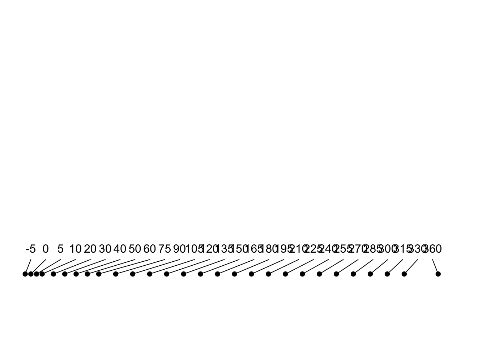
plotSamplingTimepoints(.timepoints = test_tps, .label_height = 100, .labels = TRUE)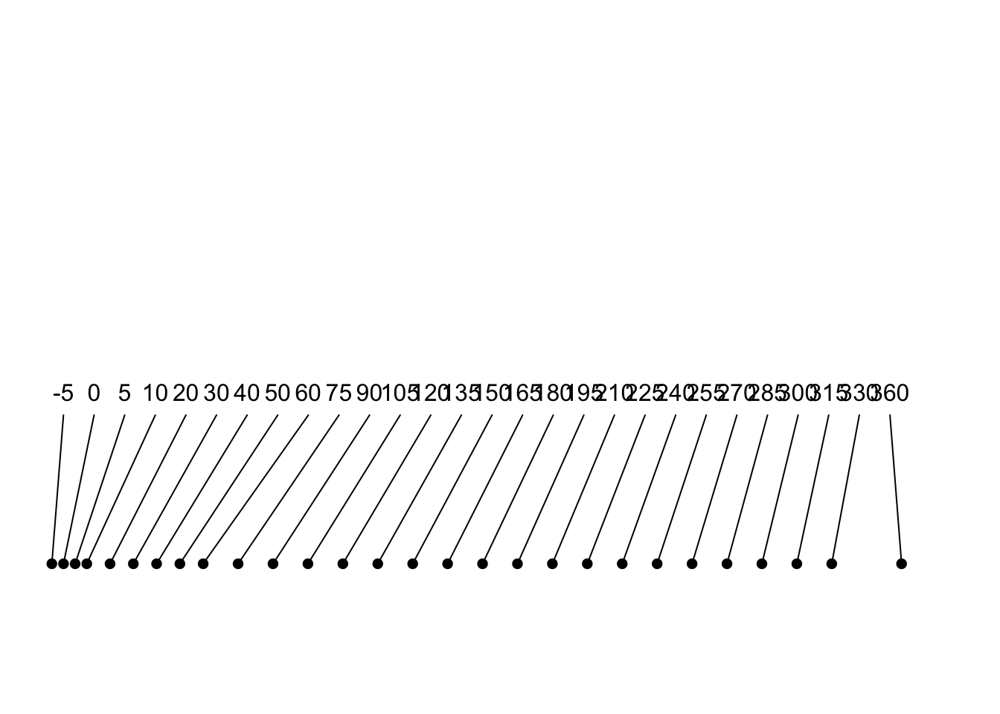
label_lookup <- tibble(experiment = ExperimentNames,
label_height = c(150, 10, 40, 20, 5, 5))# generating plots
for (e in ExperimentNames) {
e_tps <- info[info$experiment == e,]$time_point_num |> unique()
labh <- label_lookup[label_lookup$experiment == e,]$label_height |> as.numeric()
pdf(file = paste0("paper_figures/ExperimentOverview/timepoints_",
e, ".pdf"), width = 5, height = 2)
print(plotSamplingTimepoints(.timepoints = e_tps, .label_height = labh))
dev.off()
}## NULL## NULL## NULL## NULL## NULL## NULLVisualizing cluster average expression for all environments:
display.brewer.all()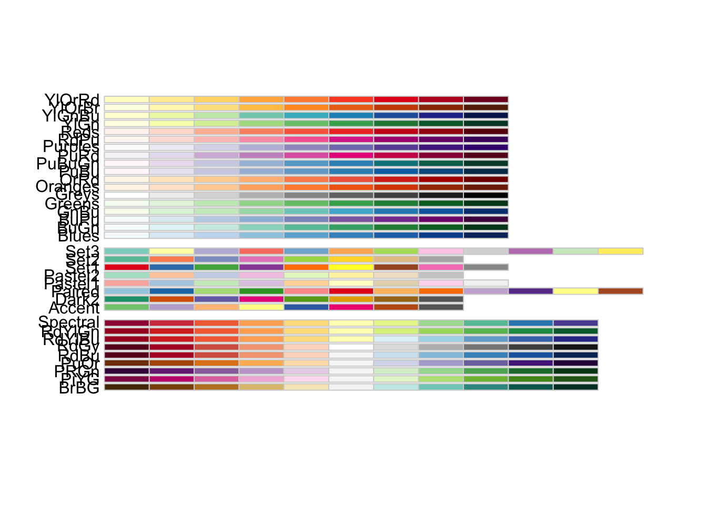
Color palettes we’ll use for the 6 environments:palettedf <- tibble(experiment = ExperimentNames,
palette = c("Greys", "YlGn", "Greens", "Purples", "YlOrBr", "BuPu"),
long_name = LongExperimentNames)Wrapping cluster plots into a function so we don’t have to repeatedly make the same plot
plotClusterPatternByExperiment <- function(.df, .experiment, .title = NULL) {
plotdf <- summarise(group_by(.df, time_point_num, label),
mean_expr = mean(expr, na.rm = TRUE))
plotdf$label <- as.factor(plotdf$label)
color_plt <- palettedf |> filter(experiment == .experiment) |> dplyr::select(palette) |> pull()
if (is.null(.title)) {
.title <- palettedf |> filter(experiment == .experiment) |> dplyr::select(long_name) |> pull()
}
ggplot(plotdf, aes(x = time_point_num, y = log2(mean_expr + 1))) +
geom_line(aes(group = label, color = label), linewidth = 4) +
geom_point(color = "black", alpha = 0.4) +
xlab("timepoint (min)") +
ylab("expression (log2)") +
scale_color_brewer(palette = color_plt, name = "cluster",
direction = -1) +
theme_classic() +
theme(legend.position = "right") +
ggtitle(.title)
}p_blank <- ggplot() + theme_void()
pdf("paper_figures/ExperimentOverview/cluster_ref.pdf",
width = 8, height = 8)
ggarrange(plotClusterPatternByExperiment(clusterdf_list$HAP4_2$df, .experiment = "HAP4"),
p_blank,
plotClusterPatternByExperiment(clusterdf_list$CC_2$df, .experiment = "CC"),
plotClusterPatternByExperiment(clusterdf_list$LowN_2$df, .experiment = "LowN"),
p_blank,
plotClusterPatternByExperiment(clusterdf_list$LowPi_2$df, .experiment = "LowPi"),
plotClusterPatternByExperiment(clusterdf_list$Heat_2$df, .experiment = "Heat"),
p_blank,
plotClusterPatternByExperiment(clusterdf_list$Cold_2$df, .experiment = "Cold"),
nrow = 3, ncol = 3, common.legend = FALSE, widths = c(2, 0.5, 2))## `summarise()` has grouped output by 'time_point_num'. You can override using the `.groups`
## argument.
## `summarise()` has grouped output by 'time_point_num'. You can override using the `.groups`
## argument.
## `summarise()` has grouped output by 'time_point_num'. You can override using the `.groups`
## argument.
## `summarise()` has grouped output by 'time_point_num'. You can override using the `.groups`
## argument.
## `summarise()` has grouped output by 'time_point_num'. You can override using the `.groups`
## argument.
## `summarise()` has grouped output by 'time_point_num'. You can override using the `.groups`
## argument.dev.off()## quartz_off_screen
## 2Similar proportions of genes are diverging in each environment
Stacked bars of 4 divergence categories in each environment:
plotdf <- finaldf |> dplyr::select(gene_name, experiment, group4) |>
pivot_wider(id_cols = c("gene_name"), names_from = "experiment",
values_from = "group4") |>
pivot_longer(cols = ExperimentNames, names_to = "experiment",
values_to = "group5") # to add NA values for low expression
plotdf$group5 <- if_else(is.na(plotdf$group5), true = "lowly expressed",
false = plotdf$group5) |>
factor(levels = c("conserved level and plasticity",
"conserved level, diverged plasticity",
"diverged level, conserved plasticity",
"diverged level and plasticity",
"lowly expressed"))
plotdf$experiment <- factor(plotdf$experiment, levels = ExperimentNames)
p <- ggplot(plotdf, aes(x = experiment)) +
geom_bar_pattern(aes(fill = group5, pattern = group5), pattern_fill = "black") +
scale_fill_discrete(type = colordf[colordf$scheme == "group4",]$type,
limits = colordf[colordf$scheme == "group4",]$limits) +
scale_pattern_discrete(choices = colordf[colordf$scheme == "group4",]$pattern,
limits = colordf[colordf$scheme == "group4",]$limits) +
scale_x_discrete(limits = ExperimentNames, labels = LongExperimentNames) +
theme_classic() +
theme(legend.title = element_blank(),
axis.text.x = element_text(angle = 45, hjust = 1, vjust = 1),
legend.position = "bottom") +
ylab("number of genes") +
xlab("") +
guides(fill = guide_legend(nrow = 3))
pdf("paper_figures/EnvironmentalPatterns/stacked_bars.pdf",
width = 5, height = 6)
p
dev.off()## quartz_off_screen
## 2Ridgeline plot of log2 fold changes in each environment:
plotdf <- filter(finaldf, level == "diverged")
filter(finaldf, plasticity == "conserved" & level == "conserved") |> group_by(experiment) |>
summarise(n = n())## # A tibble: 6 × 2
## experiment n
## <chr> <int>
## 1 CC 1329
## 2 Cold 1414
## 3 HAP4 2017
## 4 Heat 1585
## 5 LowN 1919
## 6 LowPi 1655# accompanying percentages of upScer and upSpar genes
pctdf <- plotdf |> group_by(experiment) |>
summarise(pct_upcer = round(sum(effect_size_species > 0)/length(effect_size_species), digits = 2)*100,
pct_uppar = round(sum(effect_size_species < 0)/length(effect_size_species), digits = 2)*100,
n = length(effect_size_species)) |>
pivot_longer(cols = c("pct_upcer", "pct_uppar"),
names_to = "direction", values_to = "pct") |>
mutate(x_pos = if_else(direction == "pct_upcer",
true = 5, false = -5))
pctdf$y_pos <- sapply(pctdf$experiment, \(e) which(ExperimentNames == e) + 0.5)
p <- ggplot(data = plotdf, aes(x = effect_size_species, y = experiment, fill = experiment)) +
geom_density_ridges(data = plotdf) +
geom_text(data = pctdf, aes(x = x_pos, y = y_pos, label = paste0(pct, "%"))) +
theme_classic() +
theme(legend.position = "none") +
ylab("") +
xlab("log2 fold change") +
scale_fill_discrete(limits = colordf[colordf$scheme == "experiment",]$limits,
type = colordf[colordf$scheme == "experiment",]$type) +
scale_y_discrete(limits = ExperimentNames, labels = LongExperimentNames)
p## Picking joint bandwidth of 0.264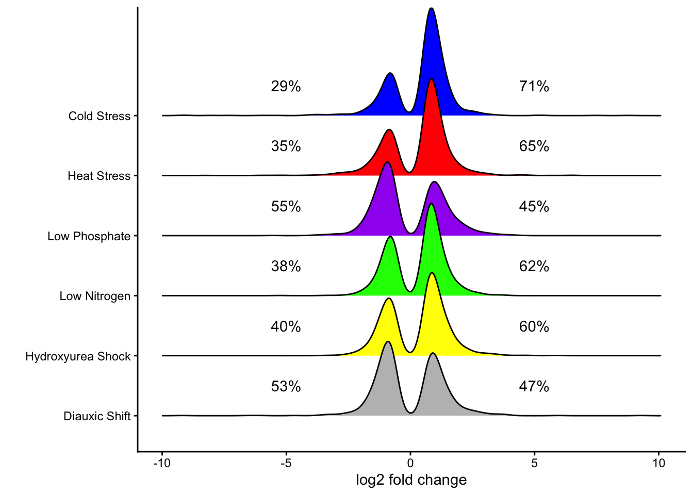
pdf("paper_figures/EnvironmentalPatterns/ridgeline.pdf",
width = 4, height = 3)
p## Picking joint bandwidth of 0.264dev.off()## quartz_off_screen
## 2Heatmap of species-specific and reversals of expression plasticity
plotdf <- finaldf |> # filter(plasticity == "diverged") |>
group_by(experiment, cer, par) |>
summarise(n = n())## `summarise()` has grouped output by 'experiment', 'cer'. You can override using the `.groups`
## argument.plotdf$long_experiment <- map(plotdf$experiment, \(e) {
LongExperimentNames[which(ExperimentNames == e)]
}) |> factor(levels = LongExperimentNames)
plotdf$cer <- factor(plotdf$cer, levels = c("0", "1", "2"))
plotdf$par <- factor(plotdf$par, levels = c("2", "1", "0"))
plotdf$type <- map2(plotdf$cer, plotdf$par, \(x, y) {
if (x == y) {
if (x == 0 & y == 0) {
return("conserved static")
}
return("conserved plastic")
}
if (x == 0) {
return("Spar-unique")
}
if (y == 0) {
return("Scer-unique")
}
else {
return("reversal")
}
}) |> unlist()
plotdf_sums <- plotdf |> group_by(long_experiment) |>
summarise(n_Exp = sum(n))
plotdf <- left_join(plotdf, plotdf_sums,
by = "long_experiment")
plotdf$pct <- (plotdf$n/plotdf$n_Exp) |> formatC(digits = 1)
p <- ggplot(plotdf, aes(x = cer, y = par, fill = type)) +
geom_tile() +
geom_text(aes(label = pct,
color = grepl(pattern = "conserved", x = type)), size = 3) +
scale_color_discrete(limits = c(TRUE, FALSE),
type = c("grey40", "white")) +
scale_fill_discrete(limits = colordf[colordf$scheme == "plasticity",]$limits,
type = colordf[colordf$scheme == "plasticity",]$type) +
facet_wrap(~long_experiment) +
theme_classic() +
xlab("Scer plasticity cluster") +
ylab("Spar plasticity cluster") +
guides(fill=guide_legend(title="number of genes")) +
theme(legend.position = "none",
panel.spacing.y = unit(1, "cm"))
pdf("paper_figures/EnvironmentalPatterns/plasticity_counts_heatmap.pdf",
width = 4, height = 3)
p
dev.off()## quartz_off_screen
## 2nGenes per experiment for paper figure:
plotdf_sums## # A tibble: 6 × 2
## long_experiment n_Exp
## <fct> <int>
## 1 Diauxic Shift 4286
## 2 Hydroxyurea Shock 3952
## 3 Low Nitrogen 4412
## 4 Low Phosphate 4383
## 5 Heat Stress 4172
## 6 Cold Stress 4051Divergence category in one environment is a poor predictor of other environments
plotdf <- finaldf |> dplyr::select(gene_name, experiment, group4) |>
# pivoting wider and longer again to add the genes that have been removed for low expression
pivot_wider(id_cols = "gene_name", values_from = "group4", names_from = "experiment") |>
pivot_longer(cols = all_of(ExperimentNames),
names_to = "experiment", values_to = "group4")
plotdf$group4[is.na(plotdf$group4)] <- "lowly expressed"
plot_mat <- plotdf |>
pivot_wider(id_cols = "gene_name",
names_from = "experiment",
values_from = "group4")
colnames_plotmat <- plot_mat$gene_name
rownames_plotmat <- colnames(plot_mat)
plot_mat <- data.frame(plot_mat) |> t()
colnames(plot_mat) <- colnames_plotmat
rownames(plot_mat) <- rownames_plotmat
plot_mat <- plot_mat[rownames(plot_mat) != "gene_name",]
plot_mat <- plot_mat |> as.matrix()
clrs <- structure(colordf[colordf$scheme == "group4",]$type,
names = colordf[colordf$scheme == "group4",]$limits)
majority_NA <- apply(plot_mat, 2, \(x) {return(sum(is.na(x)) > 2)})
sum(majority_NA)## [1] 0plot_mat <- plot_mat[,!majority_NA]
# sorting cols by HAP4's order
col_order_vec <- order(factor(plot_mat["HAP4",], levels = colordf[colordf$scheme == "group4",]$limits))
# # tests for OrderGenesByGroup (moved to function script b/c we use it in multiple scripts now)
# # subset of plotmat
# orderGenesByGroup(.mat = plot_mat[, 1:100]) |> dim()
# ordering full plotmat
ordered_plot_mat <- orderGenesByGroup(.mat = plot_mat[ExperimentNames,])
rownames(ordered_plot_mat) <- LongExperimentNames
plotdf <- map(LongExperimentNames, \(e) {
idx <- which(LongExperimentNames == e)
return(tibble(gene_name = colnames(ordered_plot_mat),
environment = e,
group4 = ordered_plot_mat[idx,],
x = c(1:ncol(ordered_plot_mat)),
y = c(length(LongExperimentNames):1)[idx])) # descending from top
}) |> purrr::reduce(.f = bind_rows)
p <- ggplot(plotdf, aes(x = x, y = y, fill = group4)) +
geom_tile_pattern(aes(fill = group4, pattern = group4), pattern_fill = "black",
pattern_density = 0.05, pattern_size = 0.05) +
scale_fill_discrete(limits = colordf[colordf$scheme == "group4",]$limits,
type = colordf[colordf$scheme == "group4",]$type) +
scale_pattern_discrete(limits = colordf[colordf$scheme == "group4",]$limits,
choices = colordf[colordf$scheme == "group4",]$pattern) +
theme_void()
p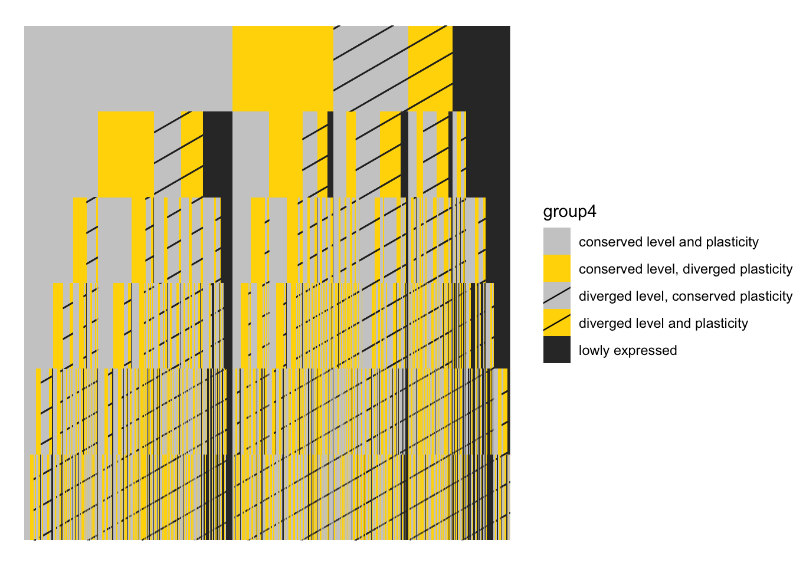
# plotting
pdf("paper_figures/EnvironmentalPatterns/discrete_heatmapLines.pdf",
width = 14, height = 2)
p
dev.off()## quartz_off_screen
## 2Level divergence is consistent across environments and mostly between strains
Genes with higher Log2 fold change in Scer:
plot_mat <- matrix(nrow = length(ExperimentNames),
ncol = length(ExperimentNames))
plot_counts <- matrix(nrow = length(ExperimentNames),
ncol = length(ExperimentNames))
# up in Scer
for (e_row in ExperimentNames) {
for (e_col in ExperimentNames) {
e_gene_idxs <- finaldf |>
filter(experiment == e_row &
level == "diverged" &
sign(effect_size_species) == 1) |>
dplyr::select(gene_name) |> pull()
avg_lfc <- finaldf |>
filter(experiment == e_col &
gene_name %in% e_gene_idxs) |>
dplyr::select(effect_size_species) |>
pull() |> mean()
n_genes <- length(e_gene_idxs)
plot_mat[which(ExperimentNames == e_row),
which(ExperimentNames == e_col)] <- avg_lfc
plot_counts[which(ExperimentNames == e_row),
which(ExperimentNames == e_col)] <- n_genes
}
}
colnames(plot_mat) <- LongExperimentNames
rownames(plot_mat) <- LongExperimentNames
col_fun = colorRamp2(c(-1, 0, 1), c("blue2", "white", "orange1"))
p <- Heatmap(plot_mat, col = col_fun,
row_order = LongExperimentNames, column_order = LongExperimentNames,
row_names_side = "left", heatmap_legend_param = list(title = ""),
cell_fun = function(j, i, x, y, width, height, fill) {
grid.text(sprintf("%.2f", plot_mat[i, j]), x, y, gp = gpar(fontsize = 10))
},
show_heatmap_legend = FALSE)
p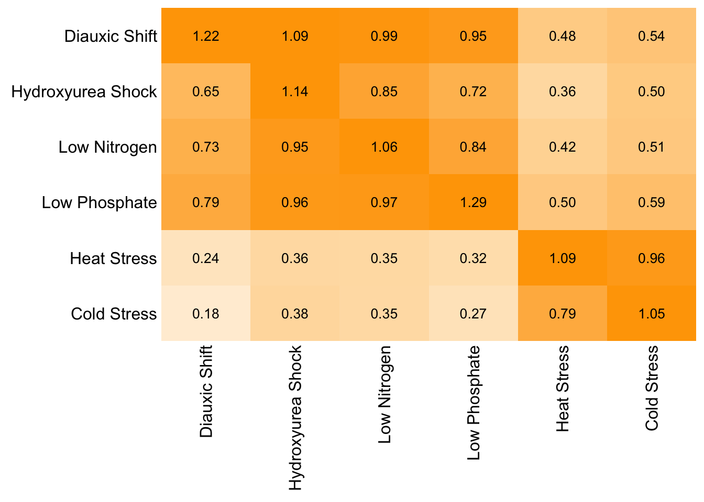
pdf("paper_figures/EnvironmentalPatterns/level_divergence_heatmap_up_scer.pdf",
width = 4, height = 3)
p
dev.off()## quartz_off_screen
## 2Legend and number of genes for paper figure (should be all the same number of genes for each row):
plot_counts## [,1] [,2] [,3] [,4] [,5] [,6]
## [1,] 559 559 559 559 559 559
## [2,] 897 897 897 897 897 897
## [3,] 986 986 986 986 986 986
## [4,] 687 687 687 687 687 687
## [5,] 903 903 903 903 903 903
## [6,] 1091 1091 1091 1091 1091 1091lgd <- Legend(col_fun = col_fun, title = "avgerage log2 fold change", direction = "horizontal") # need to run draw(lgd) in the consoleGenes with higher Log2 fold change in Spar:
plot_mat <- matrix(nrow = length(ExperimentNames),
ncol = length(ExperimentNames))
plot_counts <- matrix(nrow = length(ExperimentNames),
ncol = length(ExperimentNames))
for (e_row in ExperimentNames) {
for (e_col in ExperimentNames) {
e_gene_idxs <- finaldf |> filter(experiment == e_row &
level == "diverged" &
sign(effect_size_species) == -1) |>
dplyr::select(gene_name) |> pull()
avg_lfc <- finaldf |> filter(experiment == e_col &
gene_name %in% e_gene_idxs) |>
dplyr::select(effect_size_species) |> pull() |> mean()
plot_mat[which(ExperimentNames == e_row),
which(ExperimentNames == e_col)] <- avg_lfc
plot_counts[which(ExperimentNames == e_row),
which(ExperimentNames == e_col)] <- length(e_gene_idxs)
}
}
colnames(plot_mat) <- LongExperimentNames
rownames(plot_mat) <- LongExperimentNames
col_fun = colorRamp2(c(-1, 0, 1), c("blue2", "white", "orange1"))
p <- Heatmap(plot_mat, col = col_fun,
row_order = LongExperimentNames, column_order = LongExperimentNames,
row_names_side = "left", heatmap_legend_param = list(title = ""),
cell_fun = function(j, i, x, y, width, height, fill) {
grid.text(sprintf("%.2f", plot_mat[i, j]), x, y, gp = gpar(fontsize = 10))
}, show_heatmap_legend = FALSE)
p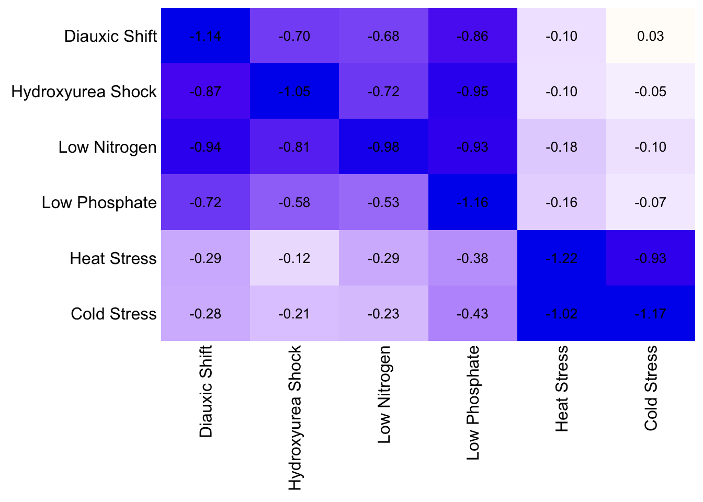
pdf("paper_figures/EnvironmentalPatterns/level_divergence_heatmap_up_spar.pdf",
width = 4, height = 3)
p
dev.off()## quartz_off_screen
## 2Legend and number of genes for paper figure (should be all the same number of genes for each row):
plot_counts## [,1] [,2] [,3] [,4] [,5] [,6]
## [1,] 623 623 623 623 623 623
## [2,] 590 590 590 590 590 590
## [3,] 598 598 598 598 598 598
## [4,] 834 834 834 834 834 834
## [5,] 478 478 478 478 478 478
## [6,] 443 443 443 443 443 443lgd <- Legend(col_fun = col_fun, title = "avgerage log2 fold change", direction = "horizontal") # need to run draw(lgd) in the consolePlasticity divergence is unique to each environment
Y axis: environment those 2-1 or 1-2 divergers were ID’d in X axis: how their plasticity divergence looks in other environments How do we measure plasticity divergence? Correlation of avg expr between species
# Given gene idxs and experiment,
# returns between-species correlation
# of average expression across timepoints
getplasticityCorr <- function(.gene_idxs, .experiment_name) {
condition_vec <- info |> filter(experiment == .experiment_name) |>
dplyr::select(condition) |> pull()
cer_vec <- collapsed$cer[.gene_idxs, condition_vec] |>
colMeans(na.rm = TRUE)
par_vec <- collapsed$par[.gene_idxs, condition_vec] |>
colMeans(na.rm = TRUE)
return(cor(cer_vec, par_vec))
}
# tests for getplasticity Corr
# HAP4 2-1, should be very uncorrelated in Sat Growth
gene_idxs <- finaldf |> filter(experiment == "HAP4" &
cer == 2 & par == 1) |>
dplyr::select(gene_name) |> pull()
getplasticityCorr(gene_idxs, .experiment_name = "HAP4")## [,1]
## [1,] -0.9359643getplasticityCorr(gene_idxs, .experiment_name = "LowN")## [,1]
## [1,] 0.906296getplasticityCorr(gene_idxs, .experiment_name = "LowPi")## [,1]
## [1,] 0.9128942getplasticityCorr(gene_idxs, .experiment_name = "CC")## [,1]
## [1,] 0.6486633getplasticityCorr(gene_idxs, .experiment_name = "Heat")## [,1]
## [1,] 0.9786642getplasticityCorr(gene_idxs, .experiment_name = "Cold")## [,1]
## [1,] -0.4895706Heatmap of species correlations for genes increasing in Spar and decreasing in Scer:
# 2-1 divergers
plot_mat <- matrix(nrow = length(ExperimentNames),
ncol = length(ExperimentNames))
plot_counts <- matrix(nrow = length(ExperimentNames),
ncol = length(ExperimentNames))
for (e_row in ExperimentNames) {
for (e_col in ExperimentNames) {
e_gene_idxs <- finaldf |> filter(experiment == e_row &
cer == 2 & par == 1) |>
dplyr::select(gene_name) |> pull()
e_cor <- getplasticityCorr(e_gene_idxs, .experiment_name = e_col)
plot_mat[which(ExperimentNames == e_row),
which(ExperimentNames == e_col)] <- e_cor
plot_counts[which(ExperimentNames == e_row),
which(ExperimentNames == e_col)] <- length(e_gene_idxs)
}
}
colnames(plot_mat) <- LongExperimentNames
rownames(plot_mat) <- LongExperimentNames
# plotting
col_fun = colorRamp2(c(-1, 0, 1), c("red2", "white", "skyblue"))
p <- Heatmap(plot_mat, col = col_fun,
row_order = LongExperimentNames, column_order = LongExperimentNames,
row_names_side = "left", heatmap_legend_param = list(title = ""),
cell_fun = function(j, i, x, y, width, height, fill) {
grid.text(sprintf("%.2f", plot_mat[i, j]), x, y, gp = gpar(fontsize = 10))
}, show_heatmap_legend = FALSE)
p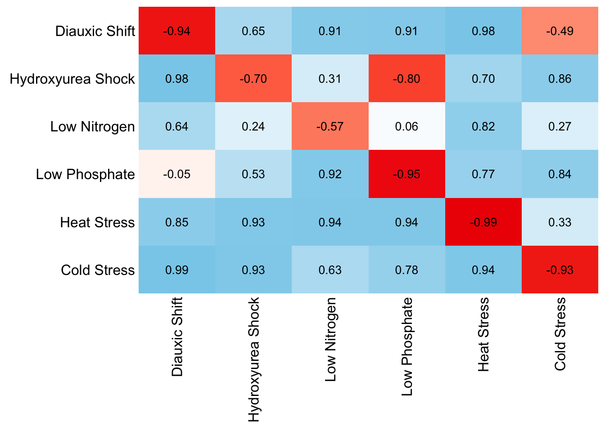
pdf("paper_figures/EnvironmentalPatterns/heatmap_21.pdf",
width = 4, height = 3)
p
dev.off()## quartz_off_screen
## 2nGenes and legend for paper figure
plot_counts## [,1] [,2] [,3] [,4] [,5] [,6]
## [1,] 289 289 289 289 289 289
## [2,] 567 567 567 567 567 567
## [3,] 75 75 75 75 75 75
## [4,] 803 803 803 803 803 803
## [5,] 431 431 431 431 431 431
## [6,] 97 97 97 97 97 97lgd <- Legend(col_fun = col_fun, title = "avgerage expression correlation", direction = "horizontal") # need to run draw(lgd) in the consoleHeatmap of species correlations for genes decreasing in Spar and increasing in Scer:
# 1-2 divergers
plot_mat <- matrix(nrow = length(ExperimentNames),
ncol = length(ExperimentNames))
plot_counts <- matrix(nrow = length(ExperimentNames),
ncol = length(ExperimentNames))
for (e_row in ExperimentNames) {
for (e_col in ExperimentNames) {
e_gene_idxs <- finaldf |> filter(experiment == e_row &
cer == 1 & par == 2) |>
dplyr::select(gene_name) |> pull()
e_cor <- getplasticityCorr(e_gene_idxs, .experiment_name = e_col)
plot_mat[which(ExperimentNames == e_row),
which(ExperimentNames == e_col)] <- e_cor
plot_counts[which(ExperimentNames == e_row),
which(ExperimentNames == e_col)] <- length(e_gene_idxs)
}
}
colnames(plot_mat) <- LongExperimentNames
rownames(plot_mat) <- LongExperimentNames
# plotting
col_fun = colorRamp2(c(-1, 0, 1), c("red2", "white", "skyblue"))
p <- Heatmap(plot_mat, col = col_fun,
row_order = LongExperimentNames, column_order = LongExperimentNames,
row_names_side = "left", heatmap_legend_param = list(title = ""),
cell_fun = function(j, i, x, y, width, height, fill) {
grid.text(sprintf("%.2f", plot_mat[i, j]), x, y, gp = gpar(fontsize = 10))
}, show_heatmap_legend = FALSE)
p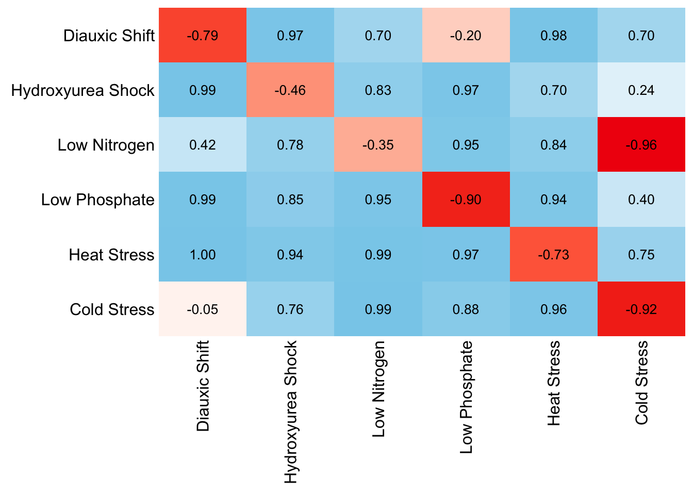
pdf("paper_figures/EnvironmentalPatterns/heatmap_12.pdf",
width = 4, height = 3)
p
dev.off()## quartz_off_screen
## 2nGenes counts for paper figure:
plot_counts## [,1] [,2] [,3] [,4] [,5] [,6]
## [1,] 55 55 55 55 55 55
## [2,] 405 405 405 405 405 405
## [3,] 52 52 52 52 52 52
## [4,] 375 375 375 375 375 375
## [5,] 118 118 118 118 118 118
## [6,] 262 262 262 262 262 262lgd <- Legend(col_fun = col_fun, title = "avgerage expression correlation", direction = "horizontal") # need to run draw(lgd) in the consoleAll plasticity-divergers grouped together:
getplasticityCorrAllClusters <- function(.gene_idxs, .experiment_name) {
condition_vec <- info |> filter(experiment == .experiment_name) |>
dplyr::select(condition) |> pull()
clust_pairs <- finaldf |> filter(gene_name %in% .gene_idxs &
experiment == .experiment_name) |>
group_by(cer, par) |> summarise(n = n()) |> ungroup()
cors <- map2(clust_pairs$cer, clust_pairs$par, \(x, y) {
clust_idxs <- finaldf |> filter(gene_name %in% .gene_idxs &
experiment == .experiment_name &
cer == x & par == y) |>
dplyr::select(gene_name) |> pull()
cer_vec <- collapsed$cer[clust_idxs, condition_vec, drop = FALSE] |>
colMeans(na.rm = TRUE)
par_vec <- collapsed$par[clust_idxs, condition_vec, drop = FALSE] |>
colMeans(na.rm = TRUE)
return(cor(cer_vec, par_vec))
}) |> unlist()
return(as.numeric(sum(cors*clust_pairs$n)/sum(clust_pairs$n))) # weighted average
}
# tests for getplasticityCorrBoth
# LowPi 1-2 alone:
gene_idxs <- finaldf |> filter(experiment == "LowPi" &
plasticity == "diverged" &
cer == 1 & par == 2) |>
dplyr::select(gene_name) |> pull()
testcor12 <- getplasticityCorrAllClusters(gene_idxs, .experiment_name = "LowPi")## `summarise()` has grouped output by 'cer'. You can override using the `.groups` argument.testcor12## [1] -0.9021212getplasticityCorr(gene_idxs, .experiment_name = "LowPi") # should be same number## [,1]
## [1,] -0.9021212# LowPi 2-1 alone:
gene_idxs <- finaldf |> filter(experiment == "LowPi" &
plasticity == "diverged" &
cer == 2 & par == 1) |>
dplyr::select(gene_name) |> pull()
testcor21 <- getplasticityCorrAllClusters(gene_idxs, .experiment_name = "LowPi")## `summarise()` has grouped output by 'cer'. You can override using the `.groups` argument.testcor21## [1] -0.9543984getplasticityCorr(gene_idxs, .experiment_name = "LowPi") # should be same number## [,1]
## [1,] -0.9543984# weights
finaldf |> filter(experiment == "LowPi" &
plasticity == "diverged" &
cer != 0 & par != 0) |>
dplyr::select(cer, par) |> table()## par
## cer 1 2
## 1 0 375
## 2 803 0# what both should be:
sum(testcor12*372, testcor21*795)/(372 + 795) # with weighted average## [1] -0.9377342mean(c(testcor12, testcor21)) # without weighted average## [1] -0.9282598# Both 1-2 and 2-1:
gene_idxs <- finaldf |> filter(experiment == "LowPi" &
plasticity == "diverged" &
cer != 0 & par != 0) |>
dplyr::select(gene_name) |> pull()
getplasticityCorrAllClusters(gene_idxs, .experiment_name = "LowPi") # should be same as manual calculation## `summarise()` has grouped output by 'cer'. You can override using the `.groups` argument.## [1] -0.9377567# test2: HAP4/CC failed until we added drop = FALSE
gene_idxs <- finaldf |> filter(experiment == "HAP4" &
plasticity == "diverged" &
cer != 0 & par != 0) |>
dplyr::select(gene_name) |> pull()
finaldf |> filter(experiment == "CC" & gene_name %in% gene_idxs) |>
dplyr::select(cer, par) |> table() # b/c there's only one 1-0 gene## par
## cer 0 1 2
## 0 6 12 5
## 1 31 148 32
## 2 9 42 50getplasticityCorrAllClusters(gene_idxs, .experiment_name = "CC")## `summarise()` has grouped output by 'cer'. You can override using the `.groups` argument.## [1] 0.5749308# plotting
plot_mat <- matrix(nrow = length(ExperimentNames),
ncol = length(ExperimentNames))
for (e_row in ExperimentNames) {
for (e_col in ExperimentNames) {
cat(e_row, e_col, "\n")
e_gene_idxs <- finaldf |> filter(experiment == e_row &
cer != 0 & par != 0 &
plasticity == "diverged") |>
dplyr::select(gene_name) |> pull()
e_cor <- getplasticityCorrAllClusters(.gene_idxs = e_gene_idxs,
.experiment_name = e_col)
plot_mat[which(ExperimentNames == e_row),
which(ExperimentNames == e_col)] <- e_cor
}
}## HAP4 HAP4## `summarise()` has grouped output by 'cer'. You can override using the `.groups` argument.## HAP4 CC## `summarise()` has grouped output by 'cer'. You can override using the `.groups` argument.## HAP4 LowN## `summarise()` has grouped output by 'cer'. You can override using the `.groups` argument.## HAP4 LowPi## `summarise()` has grouped output by 'cer'. You can override using the `.groups` argument.## HAP4 Heat## `summarise()` has grouped output by 'cer'. You can override using the `.groups` argument.## HAP4 Cold## `summarise()` has grouped output by 'cer'. You can override using the `.groups` argument.## CC HAP4## `summarise()` has grouped output by 'cer'. You can override using the `.groups` argument.## CC CC## `summarise()` has grouped output by 'cer'. You can override using the `.groups` argument.## CC LowN## `summarise()` has grouped output by 'cer'. You can override using the `.groups` argument.## CC LowPi## `summarise()` has grouped output by 'cer'. You can override using the `.groups` argument.## CC Heat## `summarise()` has grouped output by 'cer'. You can override using the `.groups` argument.## CC Cold## `summarise()` has grouped output by 'cer'. You can override using the `.groups` argument.## LowN HAP4## `summarise()` has grouped output by 'cer'. You can override using the `.groups` argument.## LowN CC## `summarise()` has grouped output by 'cer'. You can override using the `.groups` argument.## LowN LowN## `summarise()` has grouped output by 'cer'. You can override using the `.groups` argument.## LowN LowPi## `summarise()` has grouped output by 'cer'. You can override using the `.groups` argument.## LowN Heat## `summarise()` has grouped output by 'cer'. You can override using the `.groups` argument.## LowN Cold## `summarise()` has grouped output by 'cer'. You can override using the `.groups` argument.## LowPi HAP4## `summarise()` has grouped output by 'cer'. You can override using the `.groups` argument.## LowPi CC## `summarise()` has grouped output by 'cer'. You can override using the `.groups` argument.## LowPi LowN## `summarise()` has grouped output by 'cer'. You can override using the `.groups` argument.## LowPi LowPi## `summarise()` has grouped output by 'cer'. You can override using the `.groups` argument.## LowPi Heat## `summarise()` has grouped output by 'cer'. You can override using the `.groups` argument.## LowPi Cold## `summarise()` has grouped output by 'cer'. You can override using the `.groups` argument.## Heat HAP4## `summarise()` has grouped output by 'cer'. You can override using the `.groups` argument.## Heat CC## `summarise()` has grouped output by 'cer'. You can override using the `.groups` argument.## Heat LowN## `summarise()` has grouped output by 'cer'. You can override using the `.groups` argument.## Heat LowPi## `summarise()` has grouped output by 'cer'. You can override using the `.groups` argument.## Heat Heat## `summarise()` has grouped output by 'cer'. You can override using the `.groups` argument.## Heat Cold## `summarise()` has grouped output by 'cer'. You can override using the `.groups` argument.## Cold HAP4## `summarise()` has grouped output by 'cer'. You can override using the `.groups` argument.## Cold CC## `summarise()` has grouped output by 'cer'. You can override using the `.groups` argument.## Cold LowN## `summarise()` has grouped output by 'cer'. You can override using the `.groups` argument.## Cold LowPi## `summarise()` has grouped output by 'cer'. You can override using the `.groups` argument.## Cold Heat## `summarise()` has grouped output by 'cer'. You can override using the `.groups` argument.## Cold Cold## `summarise()` has grouped output by 'cer'. You can override using the `.groups` argument.colnames(plot_mat) <- LongExperimentNames
rownames(plot_mat) <- LongExperimentNames
# plotting
col_fun = colorRamp2(c(-1, 0, 1), c("red", "white", "skyblue"))
p <- Heatmap(plot_mat, col = col_fun,
row_order = LongExperimentNames, column_order = LongExperimentNames,
row_names_side = "left", heatmap_legend_param = list(title = ""),
cell_fun = function(j, i, x, y, width, height, fill) {
grid.text(sprintf("%.2f", plot_mat[i, j]), x, y, gp = gpar(fontsize = 10))
})
p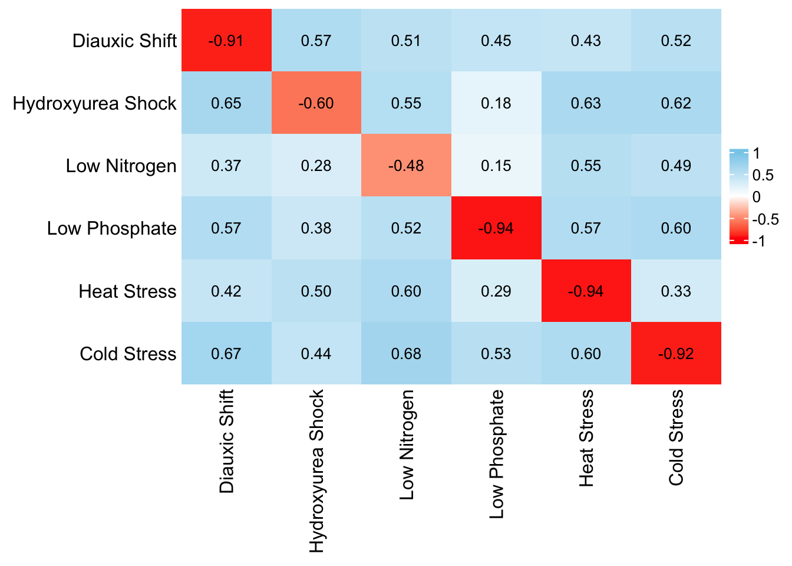
pdf("paper_figures/EnvironmentalPatterns/heatmap_plasticity_all_clusters.pdf",
width = 5, height = 4)
p
dev.off()## quartz_off_screen
## 2QC: getting plasticity cor after centering and scaling
# Given gene idxs and experiment,
# returns between-species correlation
# of average expression across timepoints
getplasticityCorr <- function(.gene_idxs, .experiment_name) {
condition_vec <- info |> filter(experiment == .experiment_name) |>
dplyr::select(condition) |> pull()
cer_vec <- collapsed$cer[.gene_idxs, condition_vec] |>
colMeans(na.rm = TRUE)
par_vec <- collapsed$par[.gene_idxs, condition_vec] |>
colMeans(na.rm = TRUE)
return(cor(cer_vec, par_vec))
}
# tests for getplasticity Corr
# HAP4 2-1, should be very uncorrelated in Sat Growth
gene_idxs <- finaldf |> filter(experiment == "HAP4" &
cer == 2 & par == 1) |>
dplyr::select(gene_name) |> pull()
getplasticityCorr(gene_idxs, .experiment_name = "HAP4")## [,1]
## [1,] -0.9359643getplasticityCorr(gene_idxs, .experiment_name = "LowN")## [,1]
## [1,] 0.906296getplasticityCorr(gene_idxs, .experiment_name = "LowPi")## [,1]
## [1,] 0.9128942getplasticityCorr(gene_idxs, .experiment_name = "CC")## [,1]
## [1,] 0.6486633getplasticityCorr(gene_idxs, .experiment_name = "Heat")## [,1]
## [1,] 0.9786642getplasticityCorr(gene_idxs, .experiment_name = "Cold")## [,1]
## [1,] -0.4895706Example expression profiles for figure
Genes increasing in Scer, decreasing in Spar, identified in Low Phosphate:
gene_idxs <- finaldf |> filter(experiment == "LowPi" & cer == 1 & par == 2) |>
dplyr::select(gene_name) |> pull()
p <- plotExpressionProfilePair(.cts1 = collapsed$cer[gene_idxs,],
.cts2 = collapsed$par[gene_idxs,],
.info1 = info,
.info2 = info,,
.method = "line",
.show_points = FALSE,
.show_confidence_intervals = TRUE,
.normalization = "log2")## `summarise()` has grouped output by 'group_id', 'experiment'. You can override using the
## `.groups` argument.p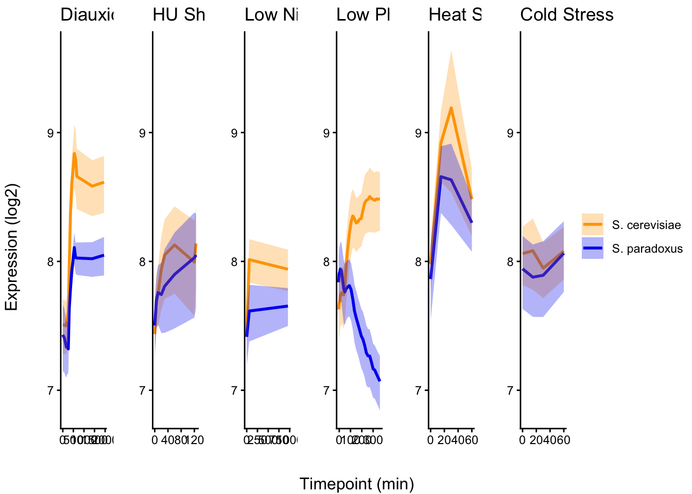
pdf("paper_figures/EnvironmentalPatterns/LowPi12.pdf",
width = 12, height = 2)
p
dev.off()## quartz_off_screen
## 2Genes with higher expression in Scer, identified in the Low Nitrogen environment:
gene_idxs <- finaldf |> filter(experiment == "LowN" & level == "diverged" &
sign(effect_size_species) == 1) |>
dplyr::select(gene_name) |> pull()
p <- plotExpressionProfilePair(.cts1 = collapsed$cer[gene_idxs,],
.cts2 = collapsed$par[gene_idxs,],
.info1 = info,
.info2 = info,,
.method = "line",
.show_points = FALSE,
.show_confidence_intervals = TRUE,
.normalization = "log2")## `summarise()` has grouped output by 'group_id', 'experiment'. You can override using the
## `.groups` argument.pdf("paper_figures/EnvironmentalPatterns/LowN_upcer.pdf",
width = 12, height = 2)
p
dev.off()## quartz_off_screen
## 2Following up on additional examples flagged in heatmap
# following up on additional examples from heatmap
# Diauxic Shift 1-2, plasticity divergers have slight negative correlation Low Pi -0.2?
gene_idxs <- finaldf |> filter(experiment == "HAP4" & cer == 1 & par == 2) |>
dplyr::select(gene_name) |> pull()
p <- plotExpressionProfilePairBasic(.cts1 = collapsed$cer[gene_idxs,],
.cts2 = collapsed$par[gene_idxs,],
.info1 = info,
.info2 = info,
.normalization = "log2")## `summarise()` has grouped output by 'group_id', 'experiment'. You can override using the
## `.groups` argument.length(gene_idxs)## [1] 55p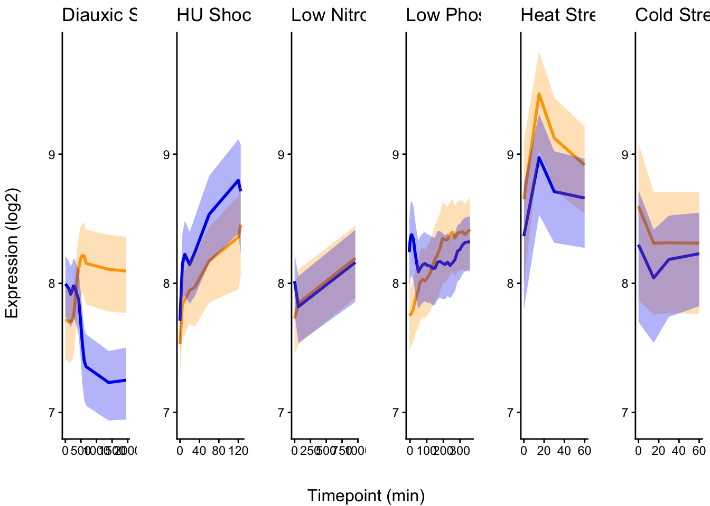
Plot for supplemental figure:
pdf("paper_figures/Supplement/HAP4-1-2.pdf",
width = 12, height = 2)
p
dev.off()## quartz_off_screen
## 2# following up on additional examples from heatmap
# Low Nitrogen 1-2, plasticity divergers have strongest negative correlation in Cold? -.97?
gene_idxs <- finaldf |> filter(experiment == "LowN" & cer == 1 & par == 2) |>
dplyr::select(gene_name) |> pull()
p <- plotExpressionProfilePairBasic(.cts1 = collapsed$cer[gene_idxs,],
.cts2 = collapsed$par[gene_idxs,],
.info1 = info,
.info2 = info,
.normalization = "log2")## `summarise()` has grouped output by 'group_id', 'experiment'. You can override using the
## `.groups` argument.length(gene_idxs)## [1] 52p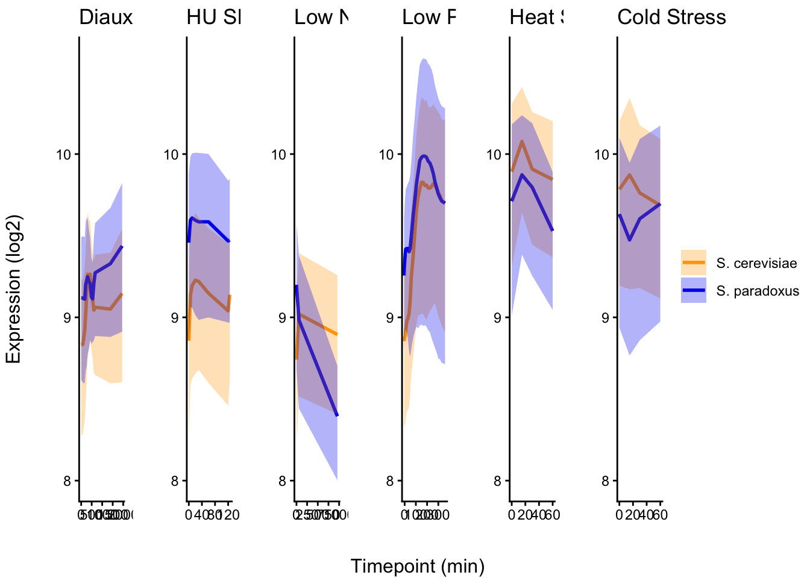
Plot for supplemental figure:
pdf("paper_figures/Supplement/LowN-1-2.pdf",
width = 12, height = 2)
p
dev.off()## quartz_off_screen
## 2Why does LowPi have correlation of 0.95 for these 52 genes? The average looks middling Conclusion: it was a result of taking log2 before the average. We want to take average before log2, as log2 is just for visualization purposes not analysis Leaving this chunk here for now in case it is helpful
gene_idxs <- finaldf |> filter(experiment == "LowN" & cer == 1 & par == 2) |>
dplyr::select(gene_name) |> pull()
getplasticityCorr(.gene_idxs = gene_idxs, .experiment_name = "LowPi")## [,1]
## [1,] 0.9484853test_condition_vec <- info |> filter(experiment == "LowPi") |>
dplyr::select(condition) |> pull()
# means
test_cer_vec <- collapsed$cer[gene_idxs, test_condition_vec] |>
colMeans(na.rm = TRUE)
test_par_vec <- collapsed$par[gene_idxs, test_condition_vec] |>
colMeans(na.rm = TRUE)
test_cer_vec_scaled <- collapsed$cer[gene_idxs, test_condition_vec] |>
t() |>
scale() |>
t() |>
colMeans(na.rm = TRUE)
test_par_vec_scaled <- collapsed$par[gene_idxs, test_condition_vec] |>
t() |>
scale() |>
t() |>
colMeans(na.rm = TRUE)
# sds
test_cer_sd <- collapsed$cer[gene_idxs, test_condition_vec] |>
apply(MARGIN = 2, FUN = sd)
test_par_sd <- collapsed$par[gene_idxs, test_condition_vec] |>
apply(MARGIN = 2, FUN = sd)
test_cer_sd_scaled <- collapsed$cer[gene_idxs, test_condition_vec] |>
t() |>
scale() |>
t() |>
apply(MARGIN = 2, FUN = sd)
test_par_sd_scaled <- collapsed$par[gene_idxs, test_condition_vec] |>
t() |>
scale() |>
t() |>
apply(MARGIN = 2, FUN = sd)
plotdf <- bind_rows(tibble(species = "cer",
expr = test_cer_vec,
scaled_expr = test_cer_vec_scaled,
sd = test_cer_sd,
scaled_sd = test_cer_sd_scaled,
timepoint = parse_number(test_condition_vec)),
tibble(species = "par",
expr = test_par_vec,
scaled_expr = test_par_vec_scaled,
sd = test_par_sd,
scaled_sd = test_par_sd_scaled,
timepoint = parse_number(test_condition_vec)))
#View(plotdf)
# scaled
p_scale <- ggplot(plotdf, aes(x = timepoint, y = scaled_expr)) +
geom_line(aes(color = species)) +
geom_ribbon(aes(ymax = scaled_expr + scaled_sd,
ymin = scaled_expr - scaled_sd,
fill = species), alpha = 0.3)
# log2
p_log <- ggplot(plotdf, aes(x = timepoint, y = log2(expr))) +
geom_line(aes(color = species)) +
geom_ribbon(aes(ymax = log2(expr + sd/sqrt(length(gene_idxs))),
ymin = log2(expr - sd/sqrt(length(gene_idxs))),
fill = species), alpha = 0.3)
ggarrange(p_scale, p_log, nrow = 1, ncol = 2)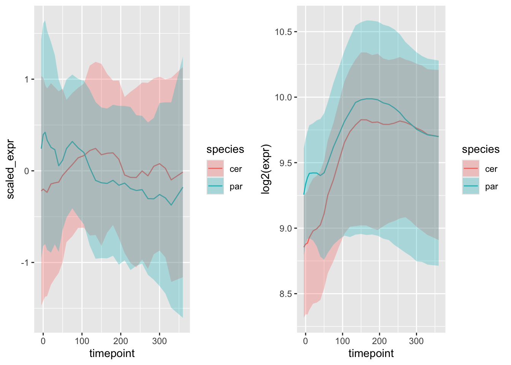
cor(test_cer_vec, test_par_vec) # should be 0.95## [,1]
## [1,] 0.9484853p_log <- plotExpressionProfilePairBasic(.cts1 = collapsed$cer[gene_idxs, info$experiment == "LowPi"],
.cts2 = collapsed$par[gene_idxs, info$experiment == "LowPi"],
.info1 = filter(info, experiment == "LowPi"),
.info2 = filter(info, experiment == "LowPi"),,
.normalization = "log2")## `summarise()` has grouped output by 'group_id', 'experiment'. You can override using the
## `.groups` argument.length(gene_idxs)## [1] 52p_scalebasic <- plotExpressionProfilePairBasic(.cts1 = collapsed$cer[gene_idxs, info$experiment == "LowPi"],
.cts2 = collapsed$par[gene_idxs, info$experiment == "LowPi"],
.info1 = filter(info, experiment == "LowPi"),
.info2 = filter(info, experiment == "LowPi"),,
.normalization = "scale")## `summarise()` has grouped output by 'group_id', 'experiment'. You can override using the
## `.groups` argument.p_scale <- plotExpressionProfilePair(.cts1 = collapsed$cer[gene_idxs, info$experiment == "LowPi"],
.cts2 = collapsed$par[gene_idxs, info$experiment == "LowPi"],
.info1 = filter(info, experiment == "LowPi"),
.info2 = filter(info, experiment == "LowPi"),,
.normalization = "scale")## `summarise()` has grouped output by 'group_id', 'experiment'. You can override using the
## `.groups` argument.ggarrange(p_scale, p_scalebasic, nrow = 1, ncol = 2, common.legend = TRUE)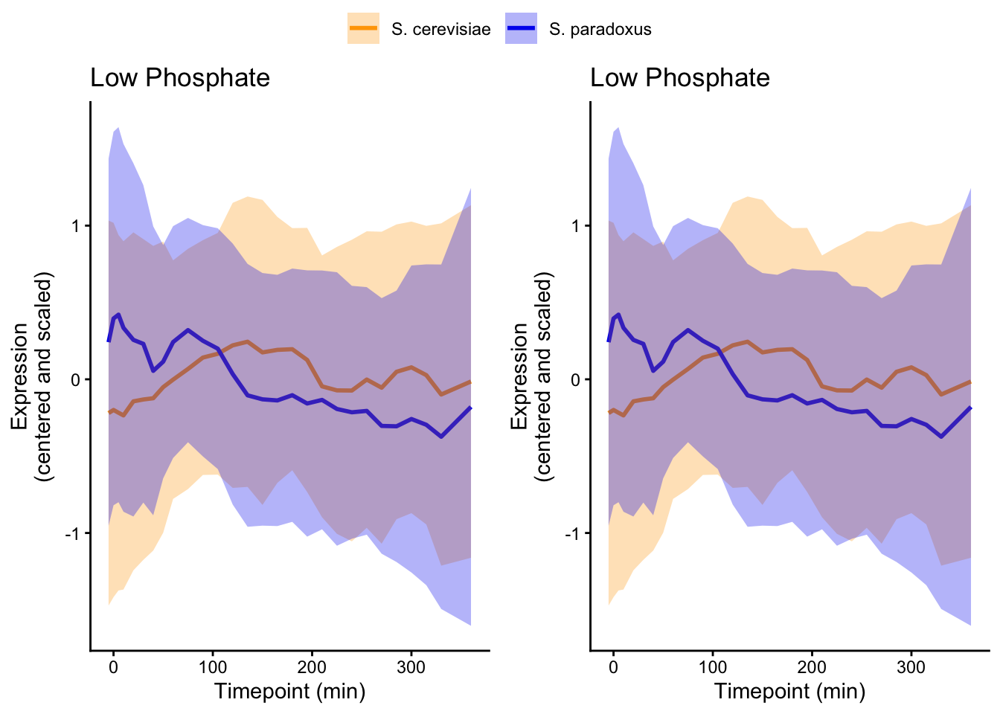
# following up on additional examples from heatmap
# Diauxic Shift 2-1, plasticity divergers also have strongest negative correlation in Cold?
gene_idxs <- finaldf |> filter(experiment == "HAP4" & cer == 2 & par == 1) |>
dplyr::select(gene_name) |> pull()
p <- plotExpressionProfilePairBasic(.cts1 = collapsed$cer[gene_idxs,],
.cts2 = collapsed$par[gene_idxs,],
.info1 = info,
.info2 = info,
.normalization = "log2")## `summarise()` has grouped output by 'group_id', 'experiment'. You can override using the
## `.groups` argument.length(gene_idxs)## [1] 289p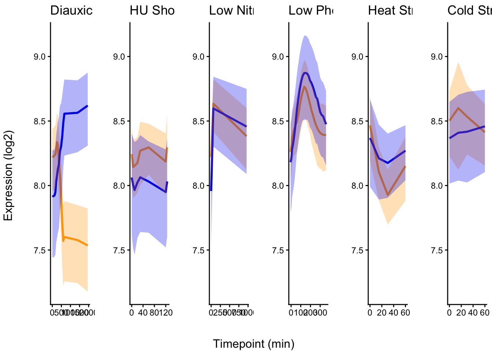
pdf("paper_figures/Supplement/HAP4-2-1.pdf",
width = 12, height = 2)
p
dev.off()## quartz_off_screen
## 2# following up on additional examples from heatmap
# HUShock 2-1, plasticity divergers also have strongest negative correlation in LowPi?
gene_idxs <- finaldf |> filter(experiment == "CC" & cer == 2 & par == 1) |>
dplyr::select(gene_name) |> pull()
p <- plotExpressionProfilePairBasic(.cts1 = collapsed$cer[gene_idxs,],
.cts2 = collapsed$par[gene_idxs,],
.info1 = info,
.info2 = info,
.normalization = "log2")## `summarise()` has grouped output by 'group_id', 'experiment'. You can override using the
## `.groups` argument.length(gene_idxs)## [1] 567p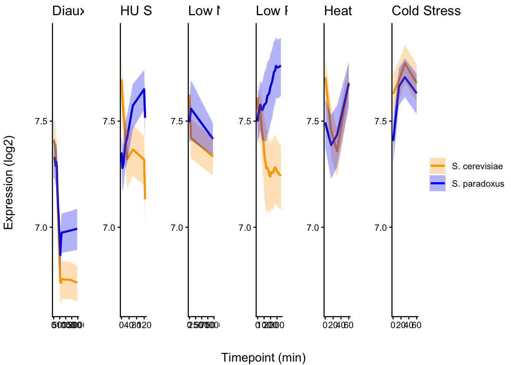
pdf("paper_figures/Supplement/CC-2-1.pdf",
width = 12, height = 2)
p
dev.off()## quartz_off_screen
## 2Supplemental figures
# no averages. This is for a large heatmap
getplasticityCorrEachGene <- function(.gene_idxs, .experiment_name) {
# filter for genes expressed high enough in this environment
finaldf |> filter(experiment == .experiment_name &
gene_name %in% .gene_idxs) |>
dplyr::select(gene_name, cor_parents) |>
right_join(y = tibble(gene_name = .gene_idxs),
by = "gene_name") |> dplyr::select(cor_parents) |> pull()
}
# tests for getplasticityCorrEachGene
test_idxs <- finaldf |> filter(experiment == "HAP4" &
plasticity == "diverged" &
cer != 0 & par != 0) |>
dplyr::select(gene_name) |> pull()
test_cors <- getplasticityCorrEachGene(.gene_idxs = test_idxs, .experiment_name = "HAP4")
test_plotmat_n <- ceiling(sqrt(length(test_cors)))
test_plotmat <- matrix(test_cors[1:(test_plotmat_n*test_plotmat_n)],
nrow = test_plotmat_n, ncol = test_plotmat_n)
# Heat has enough lowly expressed genes that are diverging in HAP4 to result in a lower-dimension square matrix being ideal (18 vs 19)
test_cors2 <- getplasticityCorrEachGene(.gene_idxs = test_idxs, .experiment_name = "Heat")
test_plotmat_n2 <- ceiling(sqrt(length(test_cors2)))
test_plotmat2 <- matrix(test_cors2[1:(test_plotmat_n2*test_plotmat_n2)],
nrow = test_plotmat_n2, ncol = test_plotmat_n2)
# plotting
test_plotmat_full <- cbind(test_plotmat, test_plotmat2)
col_fun = colorRamp2(c(-1, 0, 1), c("red2", "white", "skyblue"))
Heatmap(test_plotmat_full, col = col_fun,
row_order = c(1:nrow(test_plotmat_full)),
column_order = c(1:ncol(test_plotmat_full)),
na_col = "grey30")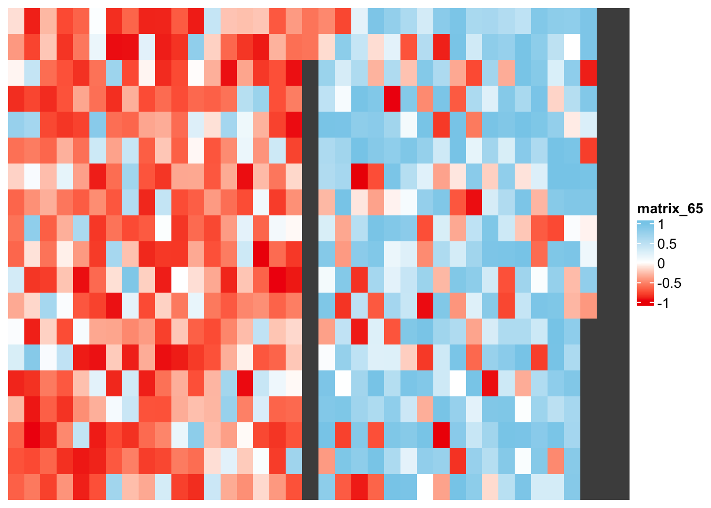
Environment-specificity of plasticity divergence is driven by the strongest divergers:
plotlist <- vector(mode = "list", length = length(ExperimentNames))
names(plotlist) <- ExperimentNames
plotlist_names <- vector(mode = "list", length = length(ExperimentNames))
names(plotlist_names) <- ExperimentNames
for (e_detect in ExperimentNames) {
e_idxs <- finaldf |> filter(experiment == e_detect &
plasticity == "diverged" &
cor_parents < -0.5 &
cer != 0 & par != 0) |>
dplyr::select(gene_name) |> pull()
e_plotmat_n <- ceiling(sqrt(length(e_idxs)))
plot_mat_row <- matrix(nrow = e_plotmat_n, ncol = 0)
plotlist_names[[e_detect]] <- matrix(e_idxs[1:(e_plotmat_n*e_plotmat_n)],
nrow = e_plotmat_n, ncol = e_plotmat_n)
for (e_measure in ExperimentNames) {
e_cors <- getplasticityCorrEachGene(.gene_idxs = e_idxs,
.experiment_name = e_measure)
e_plotmat <- matrix(e_cors[1:(e_plotmat_n*e_plotmat_n)],
nrow = e_plotmat_n, ncol = e_plotmat_n)
plot_mat_row <- cbind(plot_mat_row, e_plotmat)
}
plotlist[[e_detect]] <- plot_mat_row
}
# plotting
col_fun = colorRamp2(c(-1, 0, 1), c("red2", "white", "skyblue"))
for (e_detect in names(plotlist)) {
print(Heatmap(plotlist[[e_detect]], col = col_fun,
row_order = rownames(plotlist[[e_detect]]),
row_labels = rownames(plotlist[[e_detect]]),
column_order = c(1:ncol(plotlist[[e_detect]])),
show_heatmap_legend = FALSE,
na_col = "grey30"))
#print(plotlist_names[[e_detect]]) # to ID specific genes of interest
}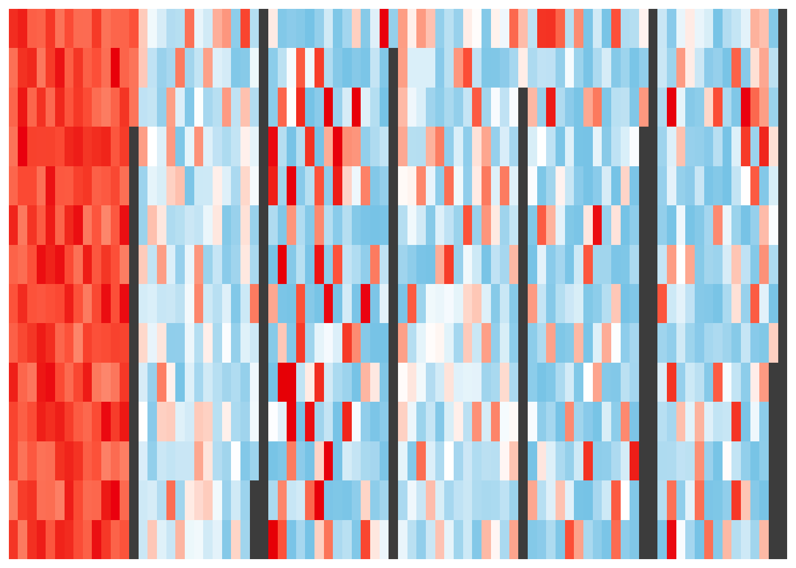
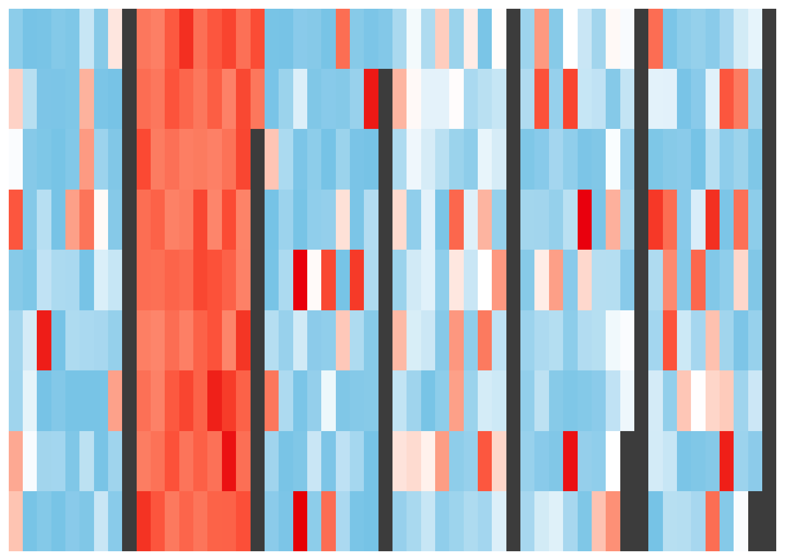
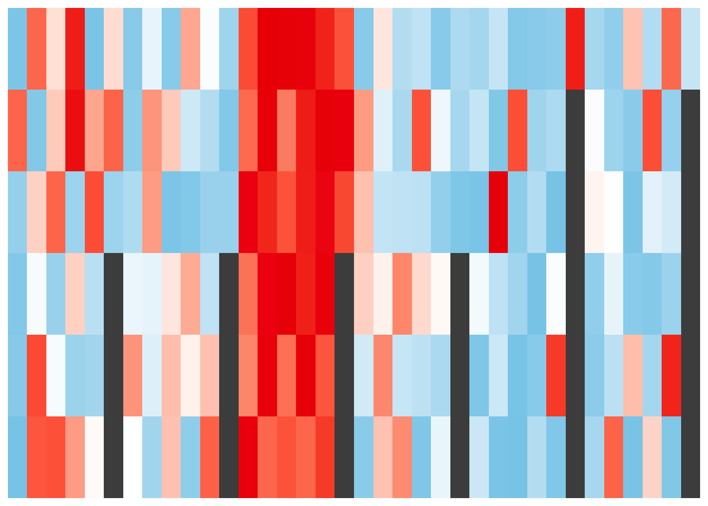
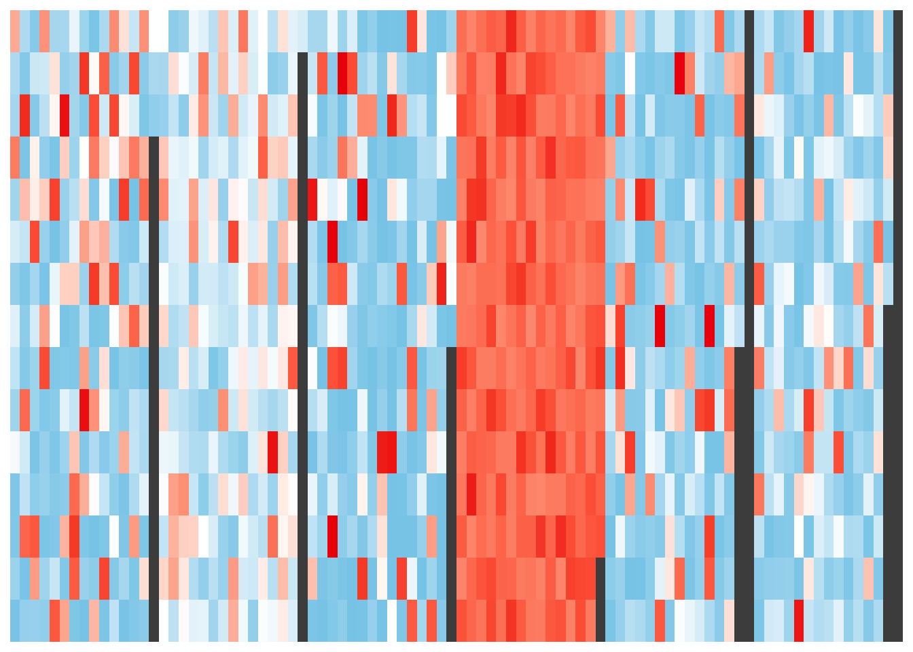
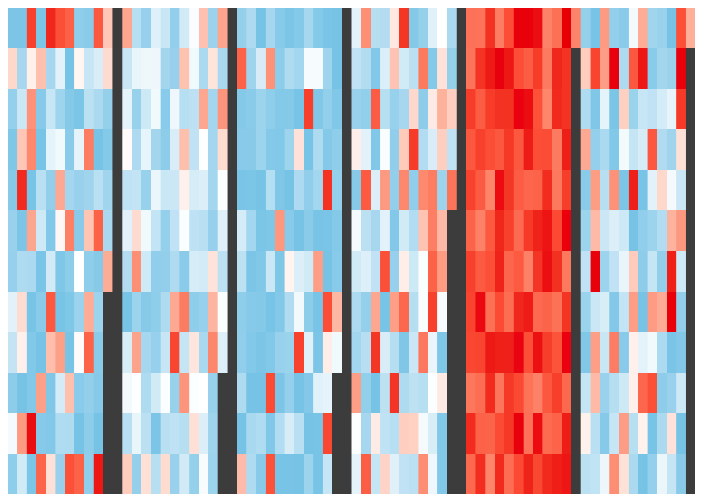
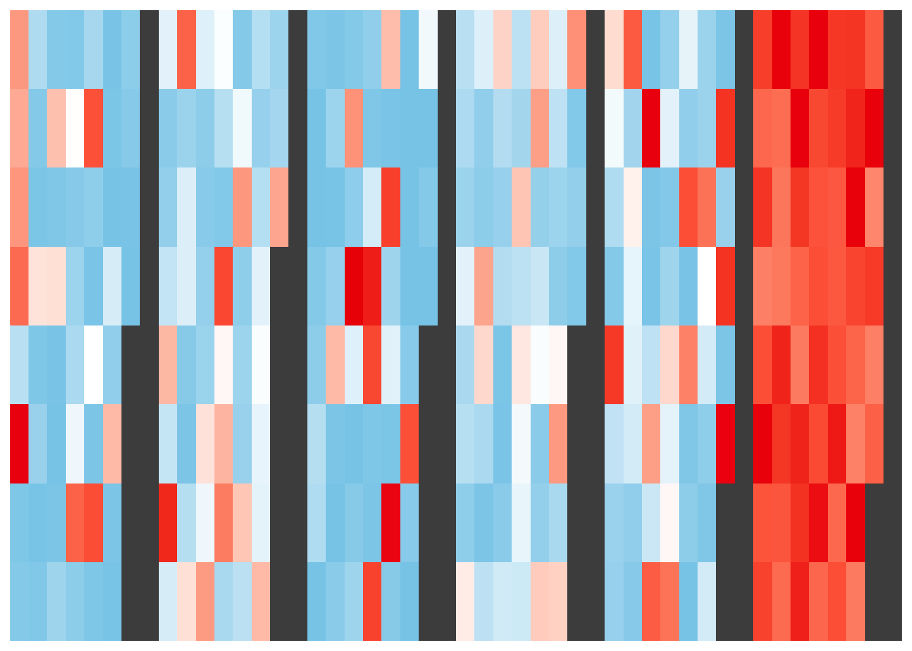
Weaker diverged (cor parents >= -0.5):
plotlist <- vector(mode = "list", length = length(ExperimentNames))
names(plotlist) <- ExperimentNames
plotlist_names <- vector(mode = "list", length = length(ExperimentNames))
names(plotlist_names) <- ExperimentNames
for (e_detect in ExperimentNames) {
e_idxs <- finaldf |> filter(experiment == e_detect &
plasticity == "diverged" &
cor_parents >= -0.5 &
cer != 0 & par != 0) |>
dplyr::select(gene_name) |> pull()
e_plotmat_n <- ceiling(sqrt(length(e_idxs)))
plot_mat_row <- matrix(nrow = e_plotmat_n, ncol = 0)
plotlist_names[[e_detect]] <- matrix(e_idxs[1:(e_plotmat_n*e_plotmat_n)],
nrow = e_plotmat_n, ncol = e_plotmat_n)
for (e_measure in ExperimentNames) {
e_cors <- getplasticityCorrEachGene(.gene_idxs = e_idxs,
.experiment_name = e_measure)
e_plotmat <- matrix(e_cors[1:(e_plotmat_n*e_plotmat_n)],
nrow = e_plotmat_n, ncol = e_plotmat_n)
plot_mat_row <- cbind(plot_mat_row, e_plotmat)
}
plotlist[[e_detect]] <- plot_mat_row
}
# plotting
col_fun = colorRamp2(c(-1, 0, 1), c("red2", "white", "skyblue"))
for (e_detect in names(plotlist)) {
print(Heatmap(plotlist[[e_detect]], col = col_fun,
row_order = rownames(plotlist[[e_detect]]),
row_labels = rownames(plotlist[[e_detect]]),
column_order = c(1:ncol(plotlist[[e_detect]])),
show_heatmap_legend = FALSE,
na_col = "grey30"))
#print(plotlist_names[[e_detect]]) # to ID specific genes of interest
}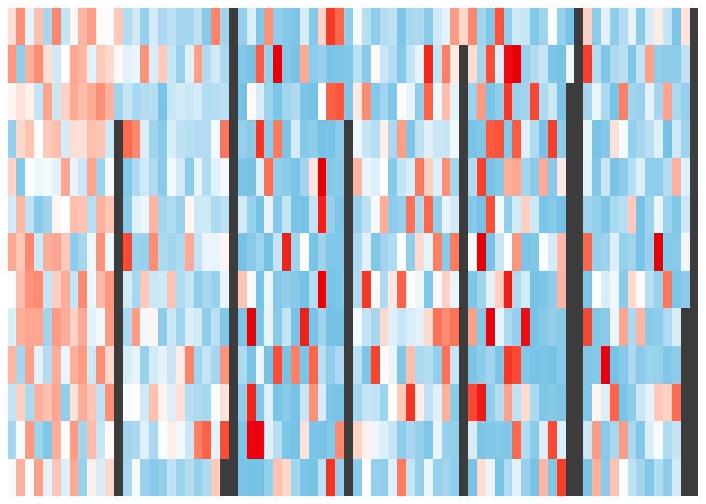
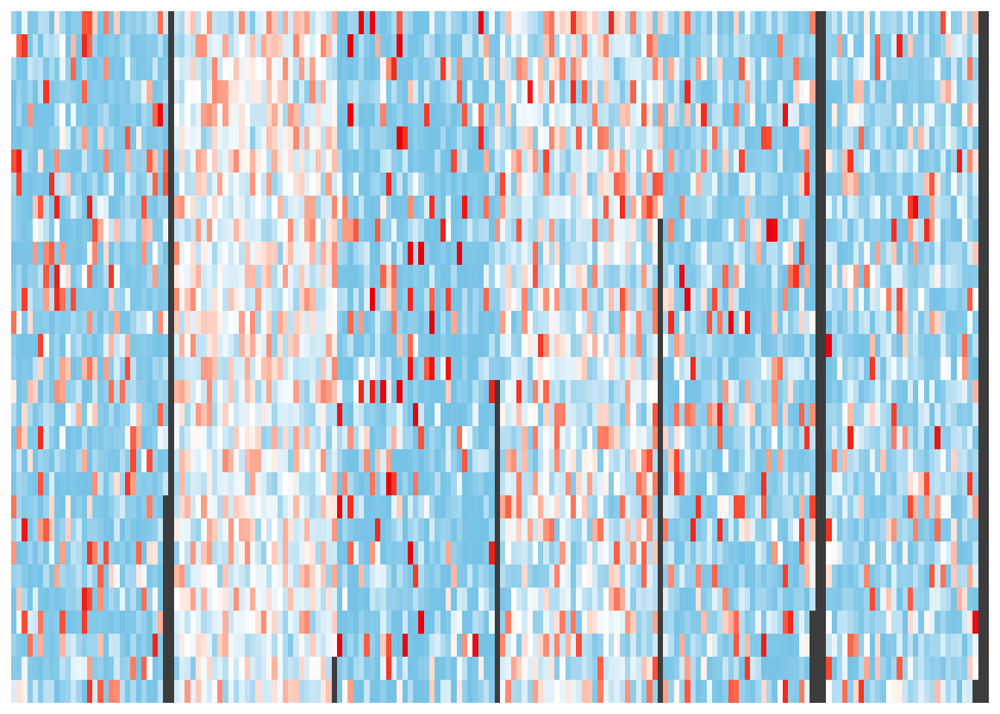
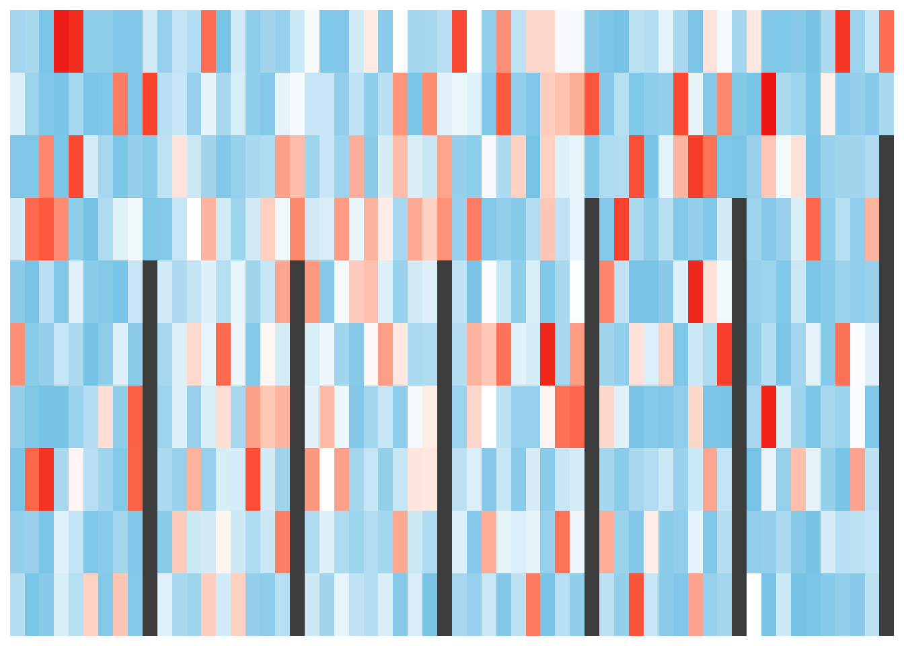
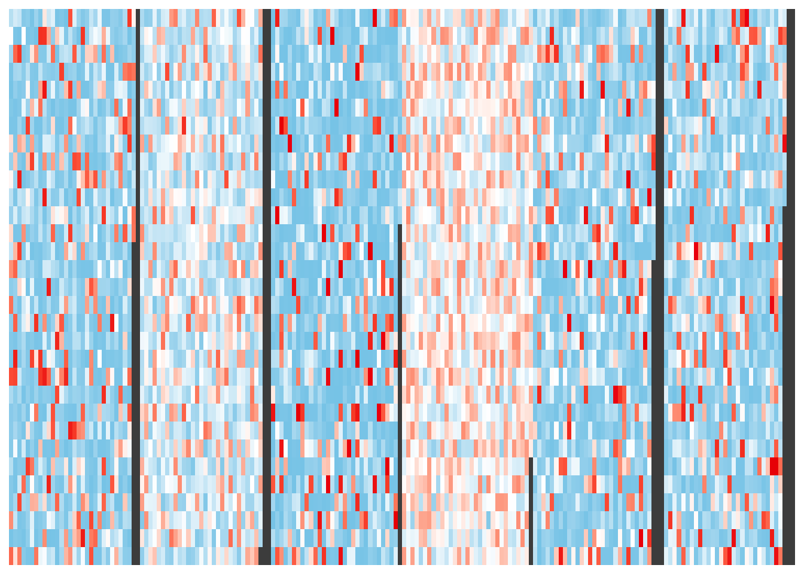
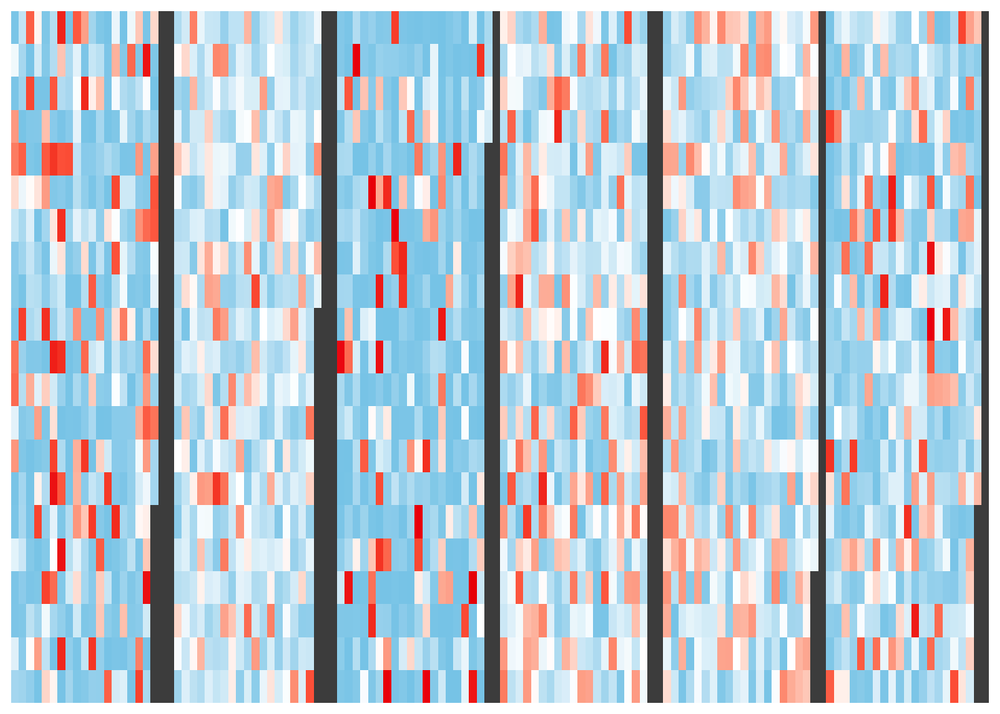
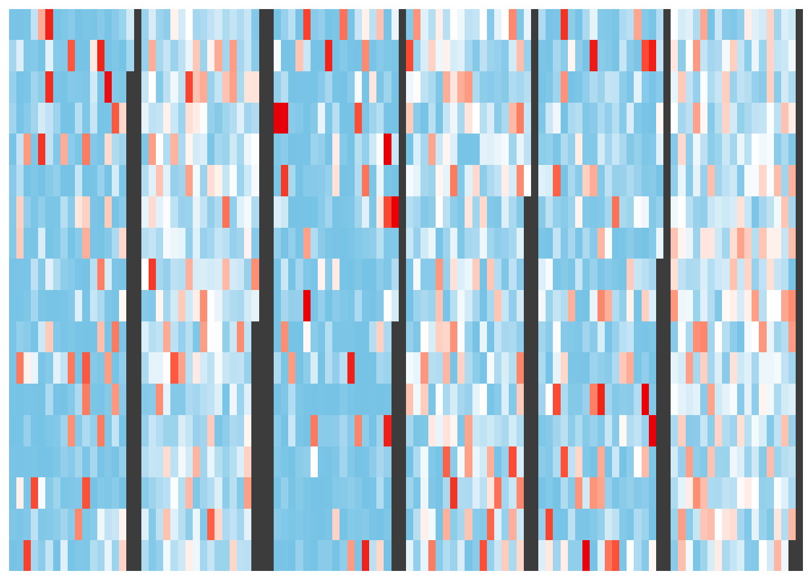
Do those genes with a low parental cor in at least one other environment have more hybrid plasticity divergence?
# TODO: pivot_wider on finaldf and sort genes that have strong plastictiy divergence
# in each environment (cor_parents < -0.5) and also strong plasticity divergence in at least
# one other environment. Then see if hybrid cor is lower for these genes vs
# ones that don't have that multi-environment divergence
plotdf <- finaldf |> filter(plasticity == "diverged" &
cer != 0 & par != 0 &
cor_parents < -0.5) |>
dplyr::select(gene_name, experiment) |>
dplyr::rename(c("detection_environment"="experiment")) |>
left_join(y = finaldf |> dplyr::select(gene_name, experiment, cor_parents, cor_hybrid, cer, par) |>
pivot_wider(id_cols = "gene_name", names_from = "experiment",
values_from = c("cor_parents", "cor_hybrid", "cer", "par")),
by = "gene_name")
plotdf$nEnv_plastdiv <- purrr::map(c(1:nrow(plotdf)), \(i) {
nEnv <- 1 # all these genes have plasticity divergence in at least one environment
e_detect <- plotdf$detection_environment[i]
for (e_test in setdiff(ExperimentNames, e_detect)) {
cor_test <- plotdf[i,] |> dplyr::select(all_of(paste0("cor_parents_", e_test)))
cer_test <- plotdf[i,] |> dplyr::select(all_of(paste0("cer_", e_test)))
par_test <- plotdf[i,] |> dplyr::select(all_of(paste0("par_", e_test)))
if (!is.na(cor_test)) {
if (cor_test < -0.5 & (cer_test != par_test) & (cer_test != 0) & (par_test != 0)) {
nEnv <- nEnv + 1
}
}
}
return(nEnv)
}) |> unlist()
plotdf$detection_cor_parents <- purrr::map(c(1:nrow(plotdf)), \(i) {
e <- plotdf$detection_environment[i]
return(dplyr::select(plotdf[i,], all_of(paste0("cor_parents_", e))))
}) |> unlist()
plotdf$min_cor_hybrid <- purrr::map(c(1:nrow(plotdf)), \(i) {
out_mean <- dplyr::select(plotdf[i,], all_of(paste0("cor_hybrid_", ExperimentNames))) |> unlist() |> min(na.rm = TRUE)
return(out_mean)
}) |> unlist()
plotdf |> mutate(high_cor_hybrid = min_cor_hybrid > 0) |>
dplyr::select(nEnv_plastdiv, high_cor_hybrid) |> table()## high_cor_hybrid
## nEnv_plastdiv FALSE TRUE
## 1 336 246
## 2 56 46
## 3 9 9Regardless of detection environment, do the genes with multi-environment plasticity divergence have higher or lower cor_hybrid?
ggplot(unique(dplyr::select(plotdf, gene_name, nEnv_plastdiv, min_cor_hybrid)),
aes(x = factor(nEnv_plastdiv), y = min_cor_hybrid)) +
geom_violin(aes(fill = factor(nEnv_plastdiv))) +
geom_jitter()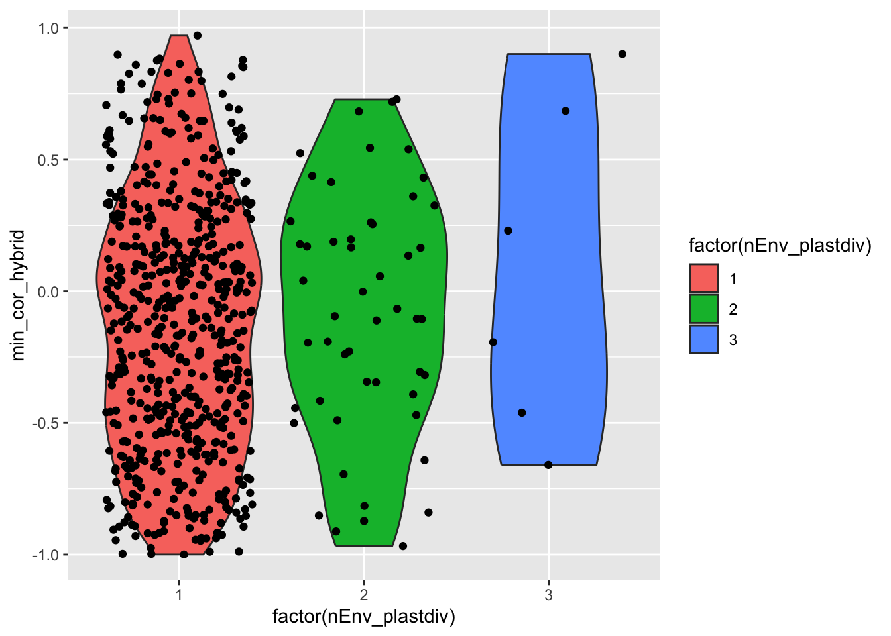
If anything, hybrid alleles have stronger correlation for the genes that are diverging in plasticity in multiple environments.
What are these 6 genes?
gene_idxs <- plotdf |> filter(nEnv_plastdiv == 3) |> dplyr::select(gene_name) |> pull() |> unique()
#plotlist <- vector(mode = "list", length = length(gene_idxs))
#names(plotlist) <- gene_idxs
for (g in gene_idxs) {
#plotlist[[g]] <- plotEnvironments(.gene_idxs = g, .quartet = TRUE)
print(plotEnvironments(.gene_idxs = g, .quartet = TRUE))
}## `summarise()` has grouped output by 'group_id', 'experiment'. You can override using the
## `.groups` argument.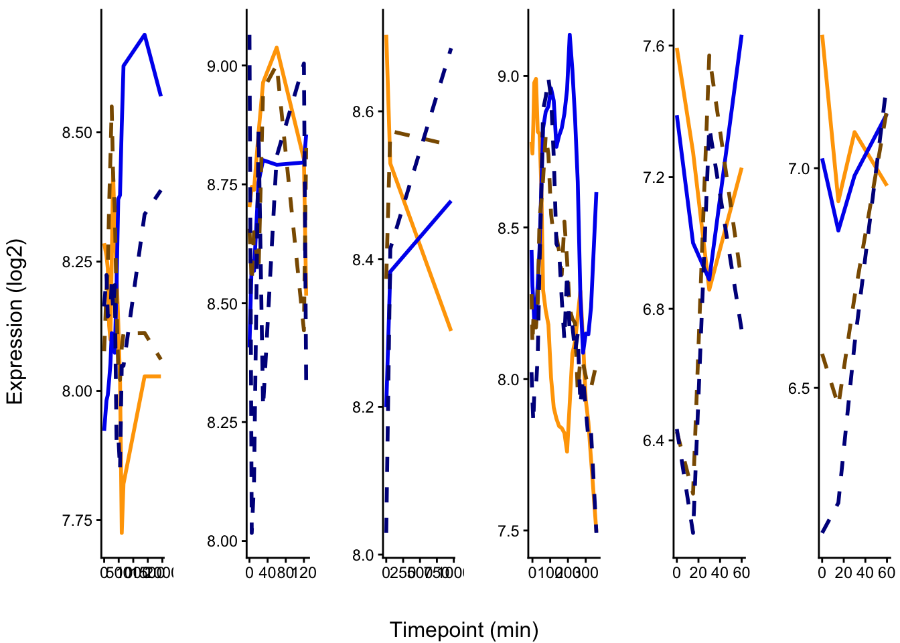
## `summarise()` has grouped output by 'group_id', 'experiment'. You can override using the
## `.groups` argument.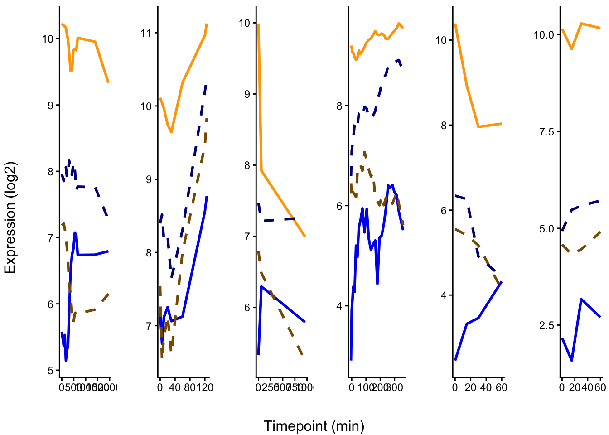
## `summarise()` has grouped output by 'group_id', 'experiment'. You can override using the
## `.groups` argument.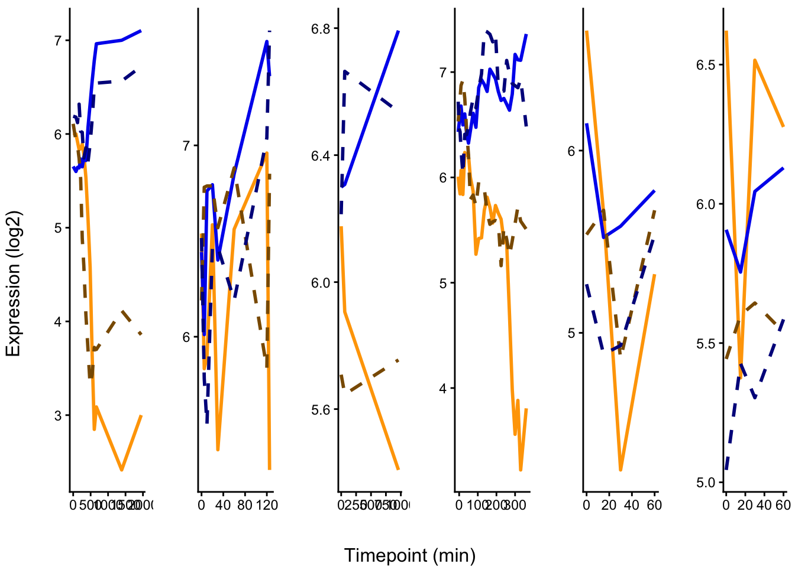
## `summarise()` has grouped output by 'group_id', 'experiment'. You can override using the
## `.groups` argument.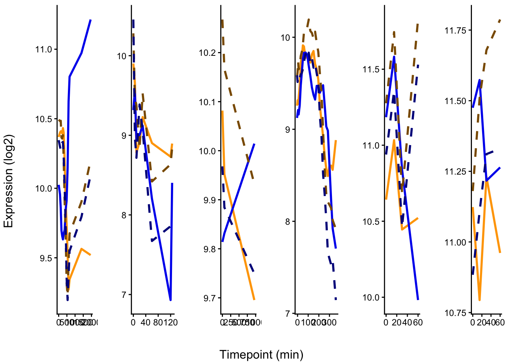
## `summarise()` has grouped output by 'group_id', 'experiment'. You can override using the
## `.groups` argument.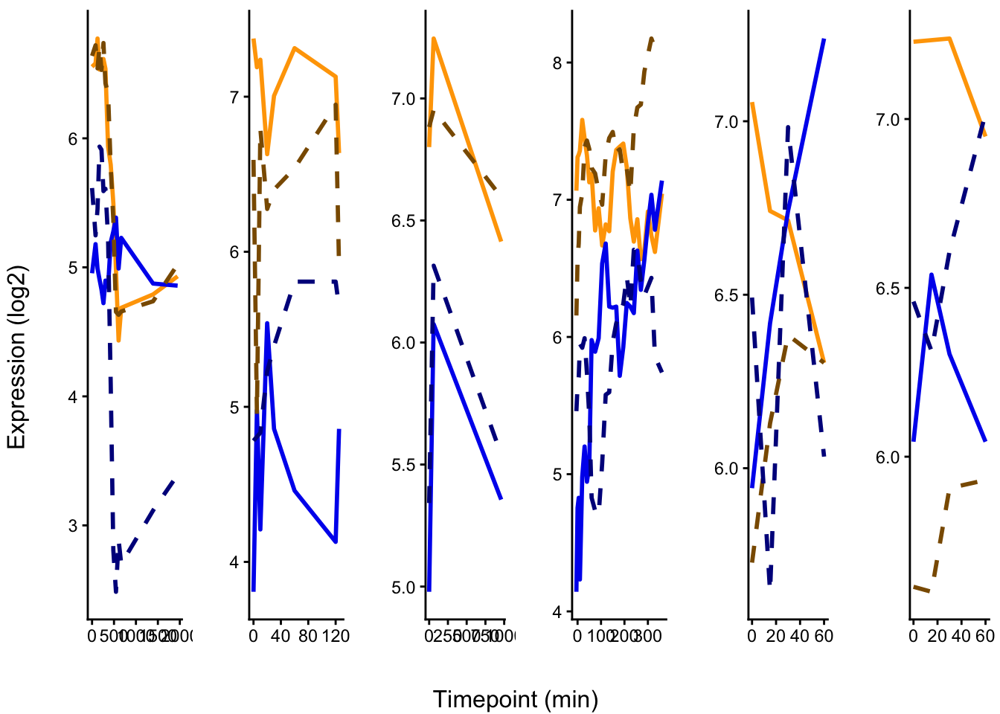
## `summarise()` has grouped output by 'group_id', 'experiment'. You can override using the
## `.groups` argument.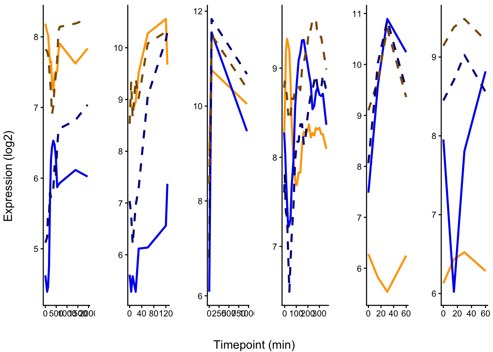
YKL127W (PGM1) is the only one that looks to have cis-diverging plasticity in multiple environments:
plotEnvironments(.gene_idxs = "YKL127W", .quartet = TRUE)## `summarise()` has grouped output by 'group_id', 'experiment'. You can override using the
## `.groups` argument.## Warning: Removed 60 rows containing missing values or values outside the scale range
## (`geom_ribbon()`).## Warning: Removed 32 rows containing missing values or values outside the scale range
## (`geom_ribbon()`).## Warning: Removed 12 rows containing missing values or values outside the scale range
## (`geom_ribbon()`).## Warning: Removed 110 rows containing missing values or values outside the scale range
## (`geom_ribbon()`).## Warning: Removed 16 rows containing missing values or values outside the scale range (`geom_ribbon()`).
## Removed 16 rows containing missing values or values outside the scale range (`geom_ribbon()`).## Warning: Removed 60 rows containing missing values or values outside the scale range
## (`geom_ribbon()`).## Warning: Removed 32 rows containing missing values or values outside the scale range
## (`geom_ribbon()`).## Warning: Removed 12 rows containing missing values or values outside the scale range
## (`geom_ribbon()`).## Warning: Removed 110 rows containing missing values or values outside the scale range
## (`geom_ribbon()`).## Warning: Removed 16 rows containing missing values or values outside the scale range (`geom_ribbon()`).
## Removed 16 rows containing missing values or values outside the scale range (`geom_ribbon()`).
Do genes that are diverging in plasticity tend to have less similar expresison in the beginning of the experiment and more similar at the end?
# example gene first, 2-1 HAP4
gene_idx <- finaldf |> filter(experiment == "HAP4" &
level == "conserved" &
cer == 2 & par == 1) |>
dplyr::select(gene_name) |> pull() |> sample(1)
# plotEnvironments(.gene_idxs = "YMR221C") # first example we found, strong CC level divergence
plotEnvironments(.gene_idxs = gene_idx)## `summarise()` has grouped output by 'group_id', 'experiment'. You can override using the
## `.groups` argument.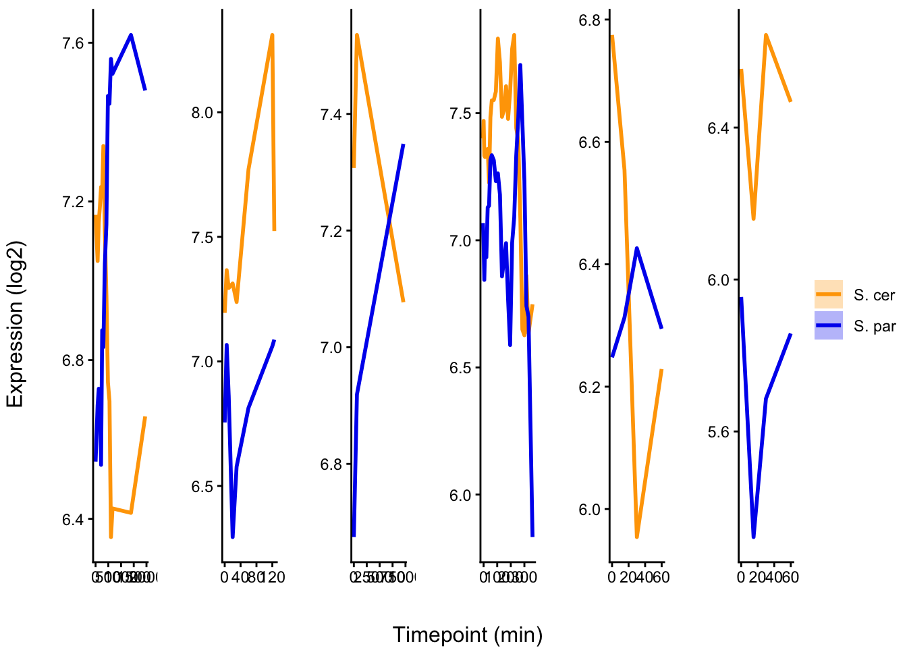
getTPAvgExpr <- function(.gene_name, .experiment, .organism,
.first_or_last = "first") {
if (.organism == "cer") {
cts_mat <- collapsed$cer
info_df <- info
}
if (.organism == "par") {
cts_mat <- collapsed$par
info_df <- info
}
if (.first_or_last == "first") {
tp0_condition <- info_df |> filter(experiment %in% .experiment) |>
filter(time_point_num == min(time_point_num)) |>
dplyr::select(condition) |> pull()
mean_expr <- cts_mat[.gene_name, tp0_condition] |> mean()
return(mean_expr)
}
if (.first_or_last == "last") {
tpLast_condition <- info_df |> filter(experiment == .experiment) |>
filter(time_point_num == max(time_point_num)) |>
dplyr::select(condition) |> pull()
mean_expr <- cts_mat[.gene_name, tpLast_condition] |> mean()
return(mean_expr)
}
}
# tests for getTPAvgExpr
getTPAvgExpr(.gene_name = "YGR192C", .experiment = "HAP4",
.organism = "cer")## [1] 19578.67getTPAvgExpr(.gene_name = "YGR192C", .experiment = "HAP4",
.organism = "par")## [1] 4457getTPAvgExpr(.gene_name = "YGR192C", .experiment = setdiff(ExperimentNames, "HAP4"),
.organism = "cer")## [1] 18328.67getTPAvgExpr(.gene_name = "YGR192C", .experiment = setdiff(ExperimentNames, "HAP4"),
.organism = "par")## [1] 3913getTPAvgExpr(.gene_name = "YGR192C", .experiment = "HAP4",
.organism = "cer", .first_or_last = "last")## [1] 8529.5getTPAvgExpr(.gene_name = "YGR192C", .experiment = "HAP4",
.organism = "par", .first_or_last = "last")## [1] 623Getting average expression of each plasticity-diverging gene in the environment they were detected in:
tpdiffdf <- finaldf |> filter(plasticity == "diverged" & level == "conserved")
tpdiffdf$tp0_cer <- purrr::map(c(1:nrow(tpdiffdf)), .f = \(i) {
getTPAvgExpr(.gene_name = tpdiffdf$gene_name[i],
.experiment = tpdiffdf$experiment[i],
.organism = "cer",
.first_or_last = "first")
}) |> unlist()
tpdiffdf$tp0_par <- purrr::map(c(1:nrow(tpdiffdf)), .f = \(i) {
getTPAvgExpr(.gene_name = tpdiffdf$gene_name[i],
.experiment = tpdiffdf$experiment[i],
.organism = "par",
.first_or_last = "first")
}) |> unlist()
tpdiffdf$tplast_cer <- purrr::map(c(1:nrow(tpdiffdf)), .f = \(i) {
getTPAvgExpr(.gene_name = tpdiffdf$gene_name[i],
.experiment = tpdiffdf$experiment[i],
.organism = "cer",
.first_or_last = "last")
}) |> unlist()
tpdiffdf$tplast_par <- purrr::map(c(1:nrow(tpdiffdf)), .f = \(i) {
getTPAvgExpr(.gene_name = tpdiffdf$gene_name[i],
.experiment = tpdiffdf$experiment[i],
.organism = "par",
.first_or_last = "last")
}) |> unlist()Calling whether tp0 or tplast had the bigger difference in expression between species:
tpdiffdf$diff_tp0 <- abs(tpdiffdf$tp0_cer - tpdiffdf$tp0_par)
tpdiffdf$diff_tplast <- abs(tpdiffdf$tplast_cer - tpdiffdf$tplast_par)
sum(tpdiffdf$diff_tp0 == 0)## [1] 22sum(tpdiffdf$diff_tplast == 0)## [1] 37getFoldTPlast <- function(.diff_tp0, .diff_tplast) {
if (.diff_tp0 == 0) {
return(.diff_tplast)
}
if (.diff_tplast == 0) {
return(0)
}
return(.diff_tplast/.diff_tp0)
}
tpdiffdf$fold_tplast <- purrr::map2(.x = tpdiffdf$diff_tp0,
.y = tpdiffdf$diff_tplast,
.f = getFoldTPlast) |>
unlist()
tpdiffdf$diff_is_strengthening <- tpdiffdf$fold_tplast > 2
tpdiffdf$diff_is_lessening <- tpdiffdf$fold_tplast < 0.5
tpdiffdf |>
dplyr::select(diff_is_strengthening, diff_is_lessening) |>
table()## diff_is_lessening
## diff_is_strengthening FALSE TRUE
## FALSE 2385 1591
## TRUE 2233 0tpdiffdf$diff_type = if_else(tpdiffdf$diff_is_strengthening,
true = "strengthen",
false = if_else(tpdiffdf$diff_is_lessening,
true = "lessen",
false = "neutral"))
save(tpdiffdf, file = "data_files//TP_FirstAndLast_Difference.RData")Example plasticity-diverging gene where the difference between species lessens over time
# example: HAP4
gene_idx <- tpdiffdf |> filter(experiment == "HAP4" &
diff_is_lessening) |>
dplyr::select(gene_name) |> pull() |> sample(1)
# plotEnvironments(.gene_idxs = "YMR221C") # first example we found, strong CC level divergence
plotGenes(.gene_idxs = gene_idx, .experiment_name = "HAP4")## `summarise()` has grouped output by 'group_id', 'experiment'. You can override using the
## `.groups` argument.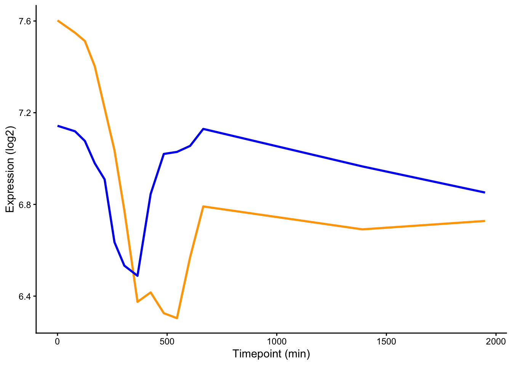
Example plasticity-diverging gene where the difference between species strengthens over time
# example: HAP4
gene_idx <- tpdiffdf |> filter(experiment == "HAP4" &
diff_is_strengthening) |>
dplyr::select(gene_name) |> pull() |> sample(1)
# plotEnvironments(.gene_idxs = "YMR221C") # first example we found, strong CC level divergence
plotGenes(.gene_idxs = gene_idx, .experiment_name = "HAP4")## `summarise()` has grouped output by 'group_id', 'experiment'. You can override using the
## `.groups` argument.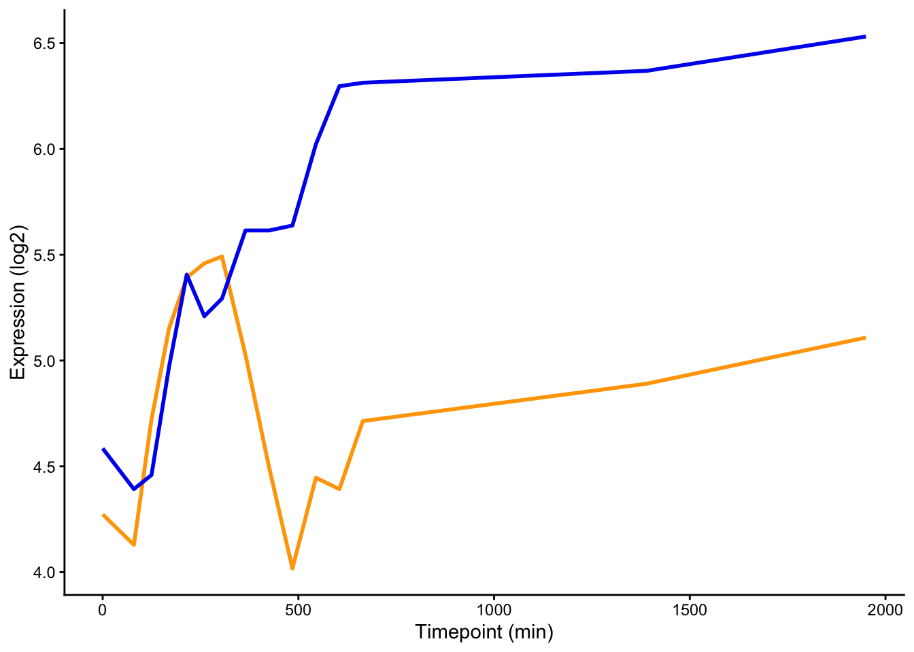